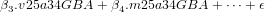

Buenos Aires: entre endriagos y sirenas
La distribución espacial del ingreso de los hogares en la
Aglomeración Gran Buenos Aires en el año 2010

Felipe Diego González
30-09-2017
Contents
Chapter 1
Introducción
1.1 El problema de la distribución espacial del ingreso
El estudio del ingreso ha sido un tema muy caro a las ciencias sociales y sus diversas
disciplinas. Constituye un objeto de estudio interesante para la economía en la
medida en que atañe a la tensión entre crecimiento de la economía y asignación de
los recursos. El fenómeno de la distribución del ingreso, entendido como nexo entre el
desempeño de una economía y las condiciones de vida de la población, adquiere
relevancia en dos sentidos: por un lado, al influir sobre la trayectoria de
crecimiento de una economía y, por el otro, al dar cuenta de los niveles de
desigualdad existentes entre los hogares y personas de una población (Giayetto,
2011).
Además de preguntarse sobre los impactos de una determinada distribución del
ingreso en el proceso de crecimiento y desarrollo, desde otros campos disciplinares, la
sociología y la ciencia política han procurado en sus desarrollos dar cuenta de las
implicancias sociales de la distribución del ingreso en términos de estabilidad del
orden social y el conflicto político concomitante. Incluso, se ha procurado
desde el corpus teórico de las ciencias sociales, ofrecer elementos para el
debate en torno a lo que se considera una distribución del ingreso justa y
equitativa. De este modo, queda explicitado el recorte del objeto de estudio en
función de una “relación de valor” (Weber, 2001), entendida como aquello
que motiva al investigador a delimitar el campo de estudio dentro de la
infinitud de datos empíricos, en virtud de la centralidad que tiene este debate
más allá de las ciencias sociales. Todo actor social forma “juicios de valor”
(Weber, 2001) sobre una distribución del ingreso ”justa”. Esta cuestión
normativa o ética impacta en las relaciones de valor que se establecen en el
método científico a la hora de delimitar objetos de estudio, tal como sostiene
Weber. Este punto también ha sido destacado por autores como David Harvey
(1993) en sus estudios sobre la dimensión espacial de la distribución del
ingreso.
Los análisis de la distribución del ingreso en las ciencias sociales han puesto el
foco principalmente en la distribución funcional y la distribución personal (la
primera poniendo el foco en el retorno a los factores productivos y la segunda en el
ingreso individual de cada actor, amen a qué factor productivo pertenezca). Sin
embargo, existe otra clave de análisis: la espacial o geográfica. La misma enfoca la
cuestión analizando la comparación de diferentes áreas geográficas en términos de su
ingreso (Gasparini, Marchionni, & Sosa Escudero, 2001). Este análisis puede
combinarse con los análisis funcionales, atendiendo a los factores productivos y su
ubicación geográfica, o puede realizarse un análisis de la distribución del ingreso
personal en diferentes zonas geográficas.
Se han desarrollado investigaciones en torno a la distribución del ingreso entre
países, ya sea tomando el ingreso total basándose en sus cuentas nacionales y
calculándolo en base al PBI (Theil, 1979) o en base a distribuciones del ingreso
personal utilizando encuestas de ingresos y gastos (Milanovic, 2002; Milanovic, 2005;
Davies, Sandström, Shorrocks, & Wolff, 2012). También se han realizado entre
regiones o provincias de un país (Artana & Moskovits, 1999) que pueden hacer
referencia al ingreso total utilizando como base el producto bruto geográfico (PBG)
(Altimir, 1975). A su vez, y es el camino que se emprenderá en este trabajo, es
plausible analizar la distribución del ingreso hacia el interior de un
aglomerado urbano (Gasparini, Marchionni, & Sosa Escudero, 2000; Giayetto,
2011).
Anticipando algunas cuestiones de orden metodológico, pero que contribuyen a
plantear la naturaleza del problema con el que lidia este trabajo, cada dimensión del
ingreso tiene su correspondiente set de instrumentos metodológicos para la medición
de su distribución. Por un lado, para dar cuenta de la distribución funcional, las
cuentas nacionales proveen la información suficiente para establecer qué parte del
ingreso, como contracara del producto, es retribución del factor trabajo, capital o
tierra (Graña, Kennedy, Lindenboim, & Pissaco, 2005). Existen, para esta medición,
dificultades intrínsecas a la hora de abordar los impuestos como así también
situaciones que tienen que ver con los cambios en el mundo laboral reciente, pero
que exceden los objetivos de este trabajo. Por otro lado, los análisis de la
distribución personal del ingreso han utilizado numerosas metodologías para
su medición entre las cuales se encuentran los conocidos índices de Gini,
Atkinson, Theil entre otros (World Bank, 2005), que toman como principal
fuente las encuestas nacionales o registros administrativos sobre trabajo e
ingresos.
Sin embargo, a la hora de analizar la distribución personal del ingreso en su
dimensión geográfica o espacial, existe otro desafío. Las mencionadas encuestas
nacionales y provinciales de empleo que miden ingresos no ofrecen un nivel de
desagregación geográfica suficiente para hacerlo en áreas geográficas pequeñas.
Las muestras que las componen ofrecen un nivel de representatividad para
grandes aglomerados, por lo cual pueden obtenerse estadísticos de interés con
suficiente representatividad para un determinado aglomerado urbano en su
conjunto, pero no para áreas geográficas menores. Por otro lado, el Censo
Nacional de Población, Hogares y Viviendas ofrece ese nivel de desagregación,
pero sin medir ingreso en los hogares de un modo directo. No obstante,
ambos instrumentos miden un conjunto de variables comunes. El problema
radica en establecer un método replicable que a partir de esas variables
construya un índice que permita aproximarse al ingreso de los hogares a
partir de un método cuya validez esté respaldada estadísticamente. Esta
es la dimensión que se intentará profundizar en el trabajo, en especial al
proponer una metodología para la construcción de un índice que permita
aproximar un ingreso de los hogares medio para unidades geográficas de pequeña
escala.
Para llevar adelante esta tarea este trabajo utilizará como caso de estudio la
Aglomeración Gran Buenos Aires (AGBA) y los datos del Censo Nacional de
Población, Hogares y Viviendas (Censo) de 2010 y la Encuesta Permanente de
Hogares (EPH).
La incidencia de la distribución del ingreso en el AGBA es de enorme
relevancia en términos demográficos como económicos, dado que constituye la
aglomeración urbana de mayor concentración de población del país (INDEC,
2012). A su vez, desde un punto de vista metodológico, presenta niveles
sumamente heterogéneos en términos de estructura socio-espacial, por lo cual
se puede considerar como una zona interesante para aplicar este tipo de
análisis.
En resumen, el objetivo de este trabajo es elaborar un método que permita
aproximarse indirectamente a la distribución microespacial del ingreso de los hogares
en las ciudades a partir del caso del AGBA. Entre los interrogantes que disparan este
trabajo podemos enumerar los siguientes:
- ¿Qué fuentes de información disponible existen sobre el ingreso y las
condiciones de vida de los hogares?
- ¿Qué relaciones existen entre las condiciones de vida de los hogares, según
se miden en el último Censo de 2010, y el ingreso de los mismos?
- ¿Es posible a partir de mediciones de esas características, ofrecer una
aproximación al ingreso del hogar mediante un índice que contemple estas
relaciones?
- ¿Cuál es la distribución espacial del ingreso de los hogares en la
Aglomeración Gran Buenos Aires?
- ¿Qué desafíos se presentan para expandir este análisis a otras regiones
del país?
En este sentido, se procederá en primer lugar a explorar las fuentes (Censo 2010 y
EPH 2010) e identificar variables comunes que den cuenta de las condiciones de vida
de los hogares. Segundo, se procurará determinar las relaciones existentes entre las
variables vinculadas a las condiciones de vida de los hogares y el ingreso, a partir de
la EPH. En tercer lugar, se intentará desarrollar un índice que permita
estimar el ingreso de manera válida y significativa, en base a las variables de
condiciones de vida asociadas a él, para a continuación aplicar el índice
desarrollado al caso del AGBA y verificar sus potencialidades para dar cuenta de la
heterogeneidad socioespacial del ingreso intraurbano. Por último, se analizarán
potencialidades y limitaciones de la propuesta para su replicabilidad en otros
contextos urbanos.
Desde un punto de vista académico, contar con un análisis de una distribución
espacial del ingreso puede resultar de mucha utilidad para futuras investigaciones.
Por un lado, puede contribuir en tanto que insumo para realizar una estratificación
territorial a la hora de seleccionar diseños muestrales en búsqueda de parámetros
sobre variables correlacionadas al ingreso. También puede servir precisamente para
constatar qué correlación existe en el espacio entre el ingreso y otras variables (oferta
y demanda de servicios públicos, desempeño electoral de un partido político, etc.). A
su vez, existen numerosas investigaciones que estudian la estructura socio espacial del
espacio urbano a partir de estrategias multidimensionales (socioeconómicos,
sociodemográficos, culturales) con diversas metodologías (linkage, factorial, cluster)
para las cuales un índice que pueda aproximarse al ingreso de los hogares a nivel
microespacial puede ser muy valioso como insumo para uno de los componentes o
factores. Finalmente, el componente geográfico de la distribución personal
del ingreso puede reconducir a un análisis de tipo funcional, analizando
especialmente el retorno al factor tierra en el espacio de la ciudad, es decir la renta
urbana.
Este tipo de análisis podría contribuir, en términos de políticas públicas, a
fundamentar una política tributaria progresiva de los municipios. En este sentido la
relevancia de un estudio de la distribución geográfica del ingreso, puede constituir un
insumo relevante para el diseño, implementación y evaluación de políticas públicas
en el ámbito de los gobiernos municipales, como también metropolitanos y/o
regionales.
1.2 Antecedentes
La lectura de los antecedentes académicos de este trabajo se encuentra orientada,
fundamentalmente, por tres vías de interrogación. En primer lugar, en la medida en
que se procura investigar una forma de distribución del ingreso, la distribución
espacial, es indispensable interiorizarse sobre las nociones teóricas de ingreso y
aquellas vinculadas a la distribución del mismo. En segundo lugar, en virtud de esta
forma específica de distribución, se hace necesario recorrer la literatura sobre el
impacto que tiene el espacio y el territorio sobre aquella forma de
distribución desigual de los ingresos. Más aún, como se ha de estudiar este
fenómeno recortado a la Aglomeración Gran Buenos Aires (AGBA), es necesario
profundizar en el rol del espacio urbano en general, y en el espacio urbano de dicha
aglomeración en particular. Por último, se hace indispensable revistar el cuantioso
y diverso set de instrumentos metodológicos que se han construido para
medir este fenómeno, en búsqueda de sus fortalezas y debilidades. Como toda
búsqueda de tesoro, se hace necesario, obviamente, un tesoro, un mapa y una
brújula.
1.2.1 El Tesoro: el ingreso y su distribución
Para comenzar, a la hora de definir conceptualmente ingreso ha habido diferentes
corrientes con definiciones de diversos niveles de complejidad. La literatura más
convencional en economía define ingreso como el flujo de recursos que recibe un
agente económico correspondiente a las remuneraciones por la venta o arrendamiento
de los factores productivos que posee. El ingreso puede ser pagado en bienes y
servicios o en dinero. También se puede considerar ingreso todas transferencias que
reciben los agentes económicos tales como subsidios, donaciones y otras. Sin embargo,
existe otra corriente que ha estudiado el ingreso y su distribución, entre los
que se encuentra Richard Titmuss (1962, 34), que ofrece una definición
más amplia y abarcativa: “todos los recibos que aumentan el mando de
un individuo sobre el uso de los escasos recursos- de una sociedad en otras
palabras, su acreencia neta de poder económico entre dos puntos de tiempo (...),
Por lo tanto, el ingreso es la suma algebraica de (1) el valor de mercado de
los derechos ejercidos en el consumo, y (2) el cambio en el valor del stock
de los derechos de propiedad entre el principio y el final del período en
cuestión”. De este modo, se puede contemplar una dimensión meramente nominal
y monetaria de ingreso, una dimensión real que incluya a su vez el poder
de compra de ese ingreso monetario en relación a los precios de los bienes
consumidos, como así también el cambio en el valor del stock de bienes que se
poseen.
Los análisis de la distribución del ingreso en las ciencias sociales han puesto el
foco principalmente en dos de sus dimensiones: la distribución funcional y la
distribución personal (Bemis & Morgan, 1975). La primera refiere a la forma cómo el
ingreso total se divide entre los distintos factores productivos como, por ejemplo,
trabajo, capital y tierra a través del salario, la ganancia o la renta; la segunda da
cuenta de cómo ese ingreso se distribuye entre los individuos u hogares de una
determinada región geográfica, sin importar el origen funcional de ese ingreso, ya sea
que los individuos deben ese ingreso a un salario, a ganancias o a rentas
(Gasparini et al., 2001).
El origen del interés de la distribución del ingreso se encuentra en la economía
política de David Ricardo (1994) en su obra “Principios de Economía Política y
Tributación” y fue seguido fuertemente por Karl Marx y el marxismo durante buena
parte del siglo XX. Estas corrientes abordaron el tema desde la óptica funcional “El
producto de la tierra –todo lo que se obtiene de su superficie mediante la
aplicación aunada del trabajo, de la máquina y del capital- se reparte entre tres
clases de la comunidad, a saber: el propietario de la tierra, el dueño del
capital necesario para su cultivo y los trabajadores por cuya actividad se
cultiva” (Ricardo, 1994, 5). Karl Marx tributó a esta corriente analizando la
distribución entre capital y trabajo (Marx, 2004), como así también ha
provisto profusas conceptualizaciones sobre renta agraria como una forma de
distribución funcional del ingreso que involucra particularmente al espacio (Marx,
2011).
Con el tiempo, el cambio de épocas y paradigmas en las ciencias sociales como
así también cambios en el fenómeno estudiado en sí, el interés ha ido migrando de
los análisis funcionales a los análisis centrados en la distribución personal. Por un
lado los cambios en los paradigmas en economía al imponerse el esquema neoclásico
o marginalista con su individualismo metodológico (Blaug, 1986), por otro los
cambios en la distribución del ingreso misma (ya que muchos individuos en la cima
de la distribución personal deben su ingreso a salario por ser gerentes de empresas,
CEOs y/o mano de obra altamente calificada, convirtiendo la distinción entre
distribución funcional y personal en una mucho más difusa), han llevado a poner el
acento en la distribución personal del ingreso (Altimir, 1986; Gasparini et al.,
2001).
De especial interés para este trabajo, sin embargo, son los trabajos sobre
distribución espacial o geográfica del ingreso. El abanico de trabajos sobre este tema
varía de acuerdo a si toman al ingreso en su dimensión funcional o personal y de
acuerdo a la escala de la unidad geográfica que toman como referencia. De este modo
se encuentran trabajos que llevan adelante análisis de la distribución del ingreso
personal en entre diversos países (Theil, 1979; Milanovic, 2002, 2005; Davies et al.,
2012) o entre diversas unidades subnacionales hacia el interior de un país de mayor o
menor tamaño: regiones (Orsatti & Mann, 1986; Artana & Moskovits, 1999),
provincias (Altimir, 1975) e incluso se puede analizar la distribución del ingreso hacia
el interior de un aglomerado urbano (Gasparini et al., 2000; Giayetto, 2011)
.
1.2.2 El Mapa: el papel del territorio en la distribución del ingreso
Los primeros mapas: los estudios de la ecología urbana
A la hora de analizar la distribución del ingreso hacia el interior de un espacio
urbano, como la Aglomeración Gran Buenos Aires, es necesario tener en
consideración los efectos que el espacio urbano tienen sobre esta distribución. De
hecho, este ha sido un enorme aporte del urbanismo y la sociología urbana(Park,
1936; Burgess, 1928; McKenzie, 1924; Wirth, 1938; Lefebvre, 1976; Harvey, 1993;
Castells, 2012) al dar cuenta el modo en que la organización del espacio urbano y en
especial del espacio residencial, se vuelve determinante en la distribución del ingreso
(aunque también determinados por ésta) con importantes efectos que son necesarios
tener en consideración.
La primera referencia obligada a la hora de analizar la temática del espacio, la
ciudad y la desigual distribución espacial del ingreso es la escuela de la Ecología
Urbana de comienzos del siglo XX. Nace en la Universidad de la ciudad de Chicago,
en EEUU, donde se comienza a desarrollar el paradigma de los modernos estudios
urbanos, para el análisis del espacio, la ciudad y de la distribución de los diferentes
grupos sociales en el mismo. Esta escuela se enmarcan los trabajos de Robert Park
(1936), Ernest Burgees (1928), Roderick McKenzie (1924) y Louis Wirth
(1938).
Park se encuentra entre los primeros en establecer los fundamentos teóricos de
esta escuela. Sienta las bases de la ecología humana, sobre los cuales se construye la
escuela de la ecología urbana, y tiende a pensar la sociedad en analogía con las
comunidades en las ciencias biológicas, y al espacio donde se desarrollan en términos
de hábitat. El planteo sobre las desigualdades hacia al interior de esa comunidad, y
dentro del espacio que ocupan, se basan en la diferenciación funcional producto de la
división del trabajo. Eventualmente puede acaecer una crisis, caracterizada
como ambiental, al surgir modificaciones de la relación entre la población
y los recursos del hábitat para sostenerla. En este marco de crisis hay un
aumento de la competencia hasta el surgimiento de una nueva división del
trabajo que se adapte a las nuevas condiciones de vida. En ese caso, el nivel de
competición disminuye y se retorna a un nivel de cooperación que hace a la
comunidad, y su hábitat, sustentable. Este es el fundamento de la ecología
urbana, basado en la ecología humana y en algunos elementos del estructural
funcionalismo de Spencer (Park, 1936; Betin, 1982; Gottdiener & Feagin,
1988).
En relación a la temática de este trabajo, la escuela ecológica de Chicago
desarrolló el concepto de predominio para abordar el tema de la desigual
distribución espacial del ingreso. Lucha por la vida y conflicto constituyen las
condiciones que presiden la relación entre los hombres y la relación hombre-ambiente,
determinando cierta distribución territorial de los individuos y su especialización
funcional (o “vocación” profesional). A través de procesos modelados de interacción
(competición, conflicto, adaptación y asimilación), basados en un fuerte
individualismo metodológico (Gottdiener & Feagin, 1988), Park (1936) explica la
dinámica de los espacios urbanos. A su vez, plantea la idea de predominio como
extensión de la competencia de los actores por situarse en la posición estratégica del
territorio dado, lo que en el largo plazo determina las características generales de la
comunidad urbana, asignando mayores valores del suelo a los espacios de
predominio. A su vez plantea el concepto de sucesión para dar cuenta de los
cambios en estas conformaciones: cuando una serie de acontecimientos que
sobresalen de la comunidad cuando esta crece y se desarrolla, transformando sus
características esenciales. Esto puede modificar los suelos y sus usos, convirtiendo un
espacio estratégico en desventajoso o de industrial en residencial (Betin, 1982,
p. 78).
Un discípulo de Park, Ernest Burguess (1928) elabora, en el marco del
paradigma de la ecología urbana, una particular teoría del espacio con
implicancias en la desigual distribución espacial del ingreso de acuerdo a los
diferentes grupos sociales, a la que denominó Central Business District. En esta
teoría el espacio de la ciudad se describe mediante una serie de círculos
concéntricos que representan las fases sucesivas de expansión de la ciudad en
relación a un distrito central. La distribución espacial del ingreso en esta
teoría se encuentra dada por la ubicación de las viviendas en el esquema
concéntrico. Las zonas de viviendas estarían en los círculos externos, el tercer y
el cuarto, donde viven los obreros industriales y los sectores de más altos
ingresos respectivamente. En esta teoría del espacio, los elementos de la
distancia y el tiempo al lugar de trabajo son centrales. (Burgess, 1928; Betin,
1982).
Por su lado Roderick McKenzie (1924) ofrece una mejor sistematización
de la ecología urbana con una definición más precisa de la misma como
“el estudio de las relaciones espaciales y temporales de los seres humanos
bajo la influencia de las fuerzas selectivas, distributivas y apropiadas que
actúan en el ambiente” (Betin, 1982, p. 91). Como se puede apreciar en
la definición, la relación causal entre las relaciones socio-espaciales de los
humanos y el ambiente queda fijada con un sentido unidireccional. En sus
desarrollos, la dinámica de las ciudades y comunidades no difiere mucho del
paradigma general de la ecología urbana: se pone el acento en el equilibrio entre
dimensión y recursos, donde los cambios continúan siendo exógenos al sistema
(Gottdiener & Feagin, 1988). La desigual distribución espacial del ingreso se sigue
explicando en los mismos términos generales de la ecología urbana y su
individualismo metodológico, como competencia por el espacio y los recursos, y
a través del concepto de invasión de los espacios. Sin embargo, a la hora
de pensar el espacio McKenzie problematiza el concepto al sostener que
las distancias ecológicas y lineales no siempre coinciden, en la medida en
que dos puntos pueden estar a distancias lineales diferentes (medidas en
metros o kilómetros por ejemplo) mientras que pueden estar a distancias
ecológicas equivalentes (medidas en unidades tiempo que se emplea en recorrerla
(Betin, 1982; McKenzie, 1924). De este modo el espacio es problematizado
más allá de la mera expresión en unidades simples de distancia (aunque de
algún modo el espacio sigue estando constreñido epistemológicamente a la
neutral y ubicua fricción de la distancia tan propia de la física social) (Soja,
1989).
Louis Wirth (1938) por su parte, en el ensayo Urbanism as a way of life ofrece un
análisis más elaborado de la cuestión urbana con una definición concreta de ciudad a
partir de una serie de elementos que luego estructurarán su análisis, aunque de
un modo donde el paradigma de la ecología humana, con sus limitaciones,
seguirá primando. Define la ciudad como una “localización permanente,
relativamente extensa y densa de individuos socialmente heterogéneos” (Wirth, 1938,
8).
Wirth deduce de los caracteres propios del fenómeno urbano (heterogeneidad,
tamaño y densidad) elementos sugestivos para la interpretación de los procesos
sociales tanto a nivel estructural como a nivel del conocimiento y comportamiento
humanos. Sostiene, en relación a la desigual distribución espacial del ingreso, que la
heterogeneidad social de los habitantes de una ciudad es una función de la dimensión
cuantitativa del agregado urbano, de su cantidad de habitantes y de su densidad. La
heterogeneidad es el sustrato de la diferenciación social y la división del
ambiente urbano en áreas naturales y la solidaridad de la comunidad se
sustituye por los mecanismos de competición sociales y el control social
formalizado en instituciones. Infiere de estas características una personalidad
esquizoide del habitante urbano que pasaría a ser un atributo que define a las
ciudades en la literatura posterior de esta corriente (Betin, 1982; Castells,
2012).
El espacio en Wirth “se convierte en un patrimonio raro que adquiere un valor
económico distinto en las distintas partes de la ciudad. El espacio condiciona la
organización social de la ciudad en el sentido de que influye, con su valor económico,
en la distribución de los habitantes y en su comportamiento cotidiano, estableciendo
en qué lugar deben residir, en qué lugar deben trabajar, etc.” (Betin, 1982, 106). El
sentido de la causalidad es el mismo, el espacio estructura la organización social.
Para esta escuela de pensamiento el espacio, aún en su versión más compleja de
McKenzie, no deja de ser una cuestión de influencia directa de un ambiente un
habitat natural no problematizado sobre la acción humana y de distancias en relación
a un centro. Su impacto en la dinámica social queda resumida a esta única
dimensión.
Al mismo tiempo, existe en los desarrollos de esta escuela un conjunto de
prenociones sobre aspectos culturales de la vida en la ciudad con cierta rémora
durkheimiana. Para la Escuela de Chicago, en torno al “vecindario” se juegan toda
una serie de elementos durkheimianos como la preeminencia de relaciones primarias
filiales y cooperativas de la comunidad versus las relaciones secundarias competitivas
de la sociedad. Concibe a su vez cierta función estabilizadora en la propiedad de la
vivienda vinculada a una noción de orden social y tradición rural o pre-urbana.
Wirth tributa a esta la linea durkheimiana, al diagnosticar en el espacio urbano
cierta anomia y formalización de lo social en instituciones en la ciudad. Al
mismo tiempo estudia el impacto del ambiente urbano en la personalidad
esquizoide, siguiendo a Simmel, ofreciendo como principal fundamento el mero
aumento demográfico. Estas nociones ideológico-cultuales no constituyen
un elemento de importancia para este trabajo por la temática que aborda,
pero es necesario mencionarlas en la medida en que constituyen elementos
teóricos en relación a la vivienda y a la desigual distribución espacial del
ingreso, contra los cuales, la escuela de la teoría crítica elaborará los suyos
propios.
El mapa del ingreso es el mapa del conflicto: la escuela crítica
En contrapunto con esta escuela, surge la llamada “nueva sociología urbana” de
la mano de autores como Henri Lefebvre (1976), Manuel Castells (2012)
y David Harvey (1993), que pueden inscribirse en diferentes variantes del
paradigma marxista o de la llamada teoría crítica. Esta escuela ofrece una
conceptualización del espacio mucho más profunda y en estrecha relación con los
procesos sociales más amplios, como así también aborda la dinámica de la
desigual distribución espacial del ingreso de un modo superador de
las nociones durkhemianas del ecologismo urbano. Los autores de la nueva
sociología urbana ponen en relación el espacio urbano con la dinámica de
producción, reproducción del modo de producción capitalista y el cambio
social.
El espacio se convierte en una dimensión de análisis fundamental para
comprender los procesos sociales, entendiendo que éste es simultáneamente producto
y productor de las relaciones y prácticas que lo atraviesan. Cada autor de esta
corriente comparte este concepto dialéctico de espacio, aunque puede haber
diferencias en torno al acento que se le pone a los marcos estructurales o a
la acción de los actores, como así también al grado de “especificidad” o
“autonomía” de lo urbano. Lefebvre (1976) es el primero en introducir el espacio
en el paradigma del materialismo dialéctico. Castells (2012) por su lado,
intenta ofrecer mayores precisiones en el marco de la teoría social tributaria
del estructuralismo francés. Finalmente, Harvey (1993) ofrece elementos
más concretos sobre el rol del espacio en los procesos sociales en general,
y en la distribución del ingreso en particular. En lo sucesivo, se ofrecerán
brevemente las nociones que los autores más importantes de esta escuela ofrecen
sobre su concepto de espacio y de la desigual distribución del ingreso en el
mismo.
Henri Lefebvre tiene,introduce en la teoría social del materialismo dialéctico el
espacio como una dimensión fundamental para comenzar a considerar. Sus
principales obras sobre el tema son El derecho a la ciudad, De lo rural a lo urbano,
La revolución urbana y La producción del espacio, escritos entre 1968 y 1974. Destaca
un hecho que parece elemental pero que de algún modo parece haber sido obviado en
teorizaciones pasadas sobre las relaciones sociales: que todas ellas suceden en algún
lugar, en algún espacio. Toma la calle para dar cuenta de ello. ”¿Qué es la calle?” Es
el lugar (topo) del encuentro, sin el cual no caben otros posibles encuentros en
lugares asignados a tal fin (cafés, teatros y salas diversas) (…). La calle y su espacio es
el lugar donde un grupo (la propia ciudad) se manifiesta, se muestra, se
apodera de los lugares y realiza un adecuado tiempo-espacio” (Lefebvre, 1976,
25).
Destaca, en su análisis de las transformaciones de la ciudad de París en su
tránsito hacia una ciudad comercial, sobre los vínculos entre la función, la forma y la
estructura social en el espacio y su incidencia en este proceso (Lefebvre,
1976, 17). Esta relación del espacio con los procesos sociales queda
explicitada en su naturaleza dialéctica: ”la realidad urbana modifica las relaciones
de producción, sin por otra parte, llegar a transformarlas. Se convierte en
fuerza productiva, como ocurre con la ciencia. El espacio y la política del
espacio ’expresan’ las relaciones sociales al tiempo que inciden sobre ellas”
(Lefebvre, 1976, 21). Frente al ecologismo urbano, sostiene que estos procesos
urbanos se rigen por una dinámica de implosión-explosión en el crecimiento
urbano, destacando los elementos de ruptura por sobre los de continuidad o
evolución del ecologismo urbano (Lefebvre, 1976, 20). En relación a la
desigual distribución espacial del ingreso Lefebvre continúa pensando
la misma en términos de un centro y una periferia, de la dialéctica de la
centralidad o de su negación. Sin embargo, no ofrece demasiadas precisiones que
puedan servir como guía teórica en investigaciones concretas. En su postura
excesivamente crítica de lo que entiende por empirismo, plantea una definición de
sociedad urbana como virtualidad: “sociedad urbana designa la tendencia, la
orientación, la virtualidad, más bien que un hecho consumado” (Lefebvre, 1976,
8).
Hacia 1972 Manuel Castells publica en Francia La Cuestión urbana, su principal
esfuerzo teórico en relación a esta temática. El mismo es igualmente crítico del
ecologismo, aunque presenta diferencias teóricas con Lefebvre, poniendo mayor
énfasis en el marco estructural de la acción de los actores, que en la acción en sí
misma.
En su crítica al ecologismo Castells (2012, p. 100) sostiene que “hay una
variación concomitante entre la evolución de las formas ecológicas y de las formas
culturales y sociales, sin que se pueda afirmar por ello que esta covariación sea
sistemática ni, sobre todo, que las segundas sean producidas por las primeras. En
relación a Lefebvre sus desarrollos teóricos representan, para el sociólogo español,
un avance frente a los conceptos del ecologismo urbano. En el marco del
debate sobre el impacto de un habitat urbano determinado sobre la vida
social, el autor francés se propone estudiar más la práctica del habitar que
la ecología del habitat. Sostiene que estos habitats no se descubren como
un río, sino que se les construye, se localizan los procesos que llevan a la
estructuración o la desestructuración de los grupos sociales en su habitar. Es
decir, que se integra a estos procesos el papel jugado por el ’marco espacial’,
lo que viene, por tanto, a negar el espacio únicamente como ’marco’ para
incorporarlo como elemento de una determinada práctica social (Castells, 2012,
128).
Castells propone superar esta “explicación por covariación” del determinismo
ecológico, pero tampoco aferrarse al “espontaneísmo de la acción social y la
dependencia del espacio respecto a él” que observa en Lefebvre, donde el espacio
aparecería como pura ocasión de despliegue de las relaciones sociales que en él tienen
lugar. Para el sociólogo español este proceso debe concebirse más bien como un
proceso dialéctico entre acción y estructura donde aquella acción social actúa sobre la
misma estructura, no es tan solo puro vehículo de efectos estructurados, sino que
produce otros nuevos.
En lo que refiere a la desigual distribución espacial del ingreso, la dinámica
es diferente a la propuesta por el ecologismo y enfocada desde una óptica de
estructura de clases o grupos sociales más que desde el individualismo metodológico.
“Amparándose en el organicismo ecológico, se descuida un carácter fundamental del
espacio humano, a saber, la contradictoria diferenciación de los grupos sociales. Pues
la apropiación del espacio forma parte de un proceso de la lucha que afecta al
conjunto del producto social, y esta lucha no es una mera competencia individual,
sino que enfrenta a los grupos formados por la inserción diferencial de los individuos
en los diversos componentes de la estructura social -mientras que el ’complejo
ecológico presenta una distinción sin hacer ver una diferencia’” (Castells, 2012,
p. 148).
En 1973 el geógrafo David Harvey compendia en un libro denominado Justicia
Social y la Ciudad una serie de ensayos escritos en diversos momentos de su
trayectoria académica, personal e ideológica. Sus primeros trabajos se enmarcan en el
paradigma del urbanismo y la geografía clásicos, mientras que sus trabajos tardíos
contribuyen a la tradición del materialismo dialéctico o marxismo. El nombre de los
apartados en los que divide la obra, da cuenta de esto: los primeros 3 aparecen
en el apartado Formulaciones Liberales y los segundos en Formulaciones
Socialistas.
Aún dentro del marco de lo que llama “formulaciones liberales”, Harvey realiza
una enérgica defensa del rol del espacio en los procesos sociales y critica la
perspectiva de la economía neoclásica y sus estudios regionalistas, que parecen vivir
y trabajar en un mundo sin espacio. “El espacio era simplemente una variable en un
marco conceptual ideado principalmente para el análisis económico aespacial.
Cientistas y economistas regionales siguen mostrando una predilección para la
comprensión de la economía y una incomprensión del espacio” (Harvey, 1993, 26).
Otro elemento interesante en Harvey es su complejización del concepto espacio,
definido no solo como mera distancia euclidiana entre dos puntos. Critica
el paradigma de la geometría euclidiana de la geografía tradicional para
comprender los procesos sociales en su dimensión espacial, en la medida en
que el espacio social no es isomorfo con el espacio físico (Harvey, 1993,
29).
Esta inexistencia de isomorfismo entre el espacio social y el espacio físico se
sostiene en que diversos individuos y grupos sociales tienen diferentes valoraciones
socio-culturales para un mismo espacio físico, que no pueden factorizarse
simplemente en una representación euclidiana bidimensional del espacio. “Existen
comportamientos grupales diferenciados, algunos los cuales pueden ser explicables en
términos de las características sociológicas del grupo (edad, ocupación, ingresos,
etc.): y hay estilos distintivos de actividad que sugieren qué lugares de la ciudad
particularmente diferentes, tienen muy diferentes poderes de atracción. En
estos casos, podría estar justificada una generalización a una geometría
más continua; pero incluso aquí el trabajo de los geógrafos sugiere que el
espacio está muy lejos de ser un simple espacio euclidiano (...) En general,
tenemos que concluir que el espacio social es complejo, no homogéneo, tal vez
discontinuo, y, casi con total seguridad, diferente del espacio físico en el
que el ingeniero y el planificador urbano suelen trabajar” (Harvey, 1993,
35).
A su vez, reafirma, el concepto de relación dialéctica entre espacio y acción social
entendiendo a las formas espaciales ”no como objetos inanimados en el marco de ellos
cuales los procesos sociales se despliegan, sino como elementos que contienen procesos
sociales del mismo modo en que estos procesos sociales son espaciales” (Harvey, 1993,
3).
A la hora de pensar la desigual distribución espacial del ingreso, Harvey
articula a la definición amplia de ingreso propuesta por Titmuss (“dominio sobre
los recursos escasos de la sociedad”) con su noción de espacio complejo y
multidimensional no asimilable con el espacio físico bidimensional euclidiano, y en
especial con su noción del espacio urbano y la ciudad. “Creo que es mucho más
satisfactorio considerar a la ciudad como un sistema de recursos gigantesco, la mayor
parte del cual es hecho por el hombre. Es también un sistema de recursos localizados
en el sentido de que la mayor parte de los recursos del sistema de la ciudad de los que
hacemos uso, no son ubicuos y su disponibilidad, por lo tanto, depende de la
accesibilidad y la proximidad. El sistema urbano contiene así una distribución
geográfica de los recursos creados de gran importancia económica, social,
psicológica y simbólica (...) El ingreso real de un individuo puede ser cambiado al
cambiar los recursos a su disposición. Este cambio puede ser provocado de
diferentes maneras. La cantidad de un recurso libre, sin precio, (como el aire
fresco y tranquilidad) puede ser alterada, el precio del recurso puede ser
cambiado, también el costo de acceso al mismo. Hay, por supuesto, una conexión
entre el valor de la tierra y la vivienda y el precio de los recursos, ya que los
cambios en este se capitalizan en los cambios en aquel” (Harvey, 1993, p. 68).
Existe, por lo tanto, una intensa relación entre el ingreso y la provisión
de bienes y servicios por parte de la ciudad de diferentes modos. Esa se
convierte su agenda de investigación, guiada por la pregunta sobre cómo
cambios en la forma espacial de una ciudad y los cambios en los procesos
sociales que operan en una ciudad redundan en cambios en el ingreso de un
individuo.
En conclusión, los aportes de la sociología urbana han sido precisamente los de
buscar establecer cómo el espacio urbano socialmente producido guarda una relación
con la distribución del ingreso que tiene lugar en dicho espacio (ya sea entre las
personas o entre los factores que allí se localizan). La diferencia entre las corrientes
de la sociología urbana se da en función de la naturaleza de esa relación:
mientras que para la escuela ecologista de Chicago (Park, 1936; Burgess,
1928; McKenzie, 1924; Wirth, 1938) se podría sostener que se trata de una
relación unidireccional donde las determinaciones del espacio priman, para la
escuela crítica (Lefebvre, 1976; Castells, 2012; Harvey, 1993) la misma es
de naturaleza dialéctica y por lo tanto, el espacio condiciona los procesos
sociales, pero a su vez se puede dar cuenta de una producción social del espacio
urbano.
1.2.3 La Brújula: instrumentos para medir la distribución del ingreso
Tal como se ha mencionado previamente, los análisis de la distribución del ingreso
han sido muy diversos en la literatura de las ciencias sociales y esta variedad tiene su
correlato en el instrumental metodológico desarrollado para la medición del
fenómeno. Esta variedad responde, resumidamente, a tres cuestiones que se deben
precisar a la hora de encarar un análisis de este tipo: en primer lugar, si ha de
tomarse en cuenta el origen del ingreso (análisis funcional) o no (análisis personal);
en segundo lugar la escala geográfica que recorta el análisis (internacional,
nacional, regional, provincial, urbano, microespacial) y finalmente la fuente de
información a tomar (encuestas, censos, registros administrativos, etc.). Esta
última es de especial interés en la medida en que la información disponible se
convierte en la principal restricción del análisis. De poseer fuente de datos sobre
ingreso con el suficiente nivel de desagregación, podría utilizarse alguna
de las estrategias metodológicas más consagradas para la medición de la
distribución del ingreso: los índices de Gini, Atkinson, Theil entre otros
(World Bank, 2005). Pero dicha información no se encuentra disponible ya que las
fuentes que relevan ingreso (EPH) no lo hacen con el nivel de desagregación
geográfica deseado y aquellas que alcanzan dicho nivel (Censo) no relevan dicha
información.
En este sentido, considerando que este trabajo va a centrarse en la distribución
personal del ingreso en una escala microespacial, esta sección se focaliza en los
trabajos basados en instrumentos metodológicos que tomen como fuente para su
estudio a los Censos, que son los únicos que permiten trabajar a nivel de unidades
geoestadísticas pequeñas: por un lado dos índices para la medición de la pobreza en
base a datos censales en Argentina (el índice de Necesidades Básicas Insatisfechas
(NBI) y el Índice de Privación Material de los Hogares (IPMH)) y por otro lado,
estudios que recurren a representaciones cartográficas para dar cuenta de las
desigualdades socioterritoriales intraurbanas (mapas sociales). Existe otro método
para medir pobreza basado en la comparación entre la canasta básica de consumo de
los hogares y su ingreso monetario total. El mismo se denomina ”Linea de pobreza”
((INDEC, 2003d)). Sin embargo como utiliza de manera exclusiva datos de la
EPH, sin poder ser replicable dicha metodología con datos censales, no
puede ser utilizada para un análisis de la distribución del ingreso a nivel
microespacial.
El índice de Necesidades Básicas Insatisfechas (NBI)
En un primer momento, ante la falta de datos censales que den cuenta del ingreso de
las personas, los esfuerzos de medición estuvieron centrados en uno los extremos de la
distribución del ingreso: el fenómeno de la pobreza.
La pobreza se concibe (2003a) como la exclusión debida a la carencia de recursos
necesarios para acceder a las condiciones materiales de existencia típicas de una
sociedad históricamente determinada. En el mismo documento, se sostiene que
pueden diferenciarse algunas formas de pobreza más estructurales -o permanentes-
que otras y esto se encuentra estrechamente relacionado con la naturaleza de los
satisfactores de necesidades. Por una parte, se reconocen bienes cuya obtención
demanda una provisión exitosa sostenida en el tiempo. La privación de estos
satisfactores en el hogar suele exigir un gasto considerable para revertir el estado de
carencia de los mismos (Katzman, 1989; Boltvinik, 1990). Por otra parte, hay bienes
y servicios de consumo inmediato cuya provisión es renovada permanentemente o
puede variar con mayor asiduidad. Los hogares que carecen de estos satisfactores no
necesariamente han estado expuestos a una privación recurrente y pueden
adquirir o recuperar, eventualmente, tales recursos con gastos de consumo
corriente.
Estas definiciones establecen dos dimensiones sobre el fenómeno de la pobreza,
que dan cuenta de la complejidad del mismo. De este modo se puede hablar, en un
caso, de una privación en torno a la situación patrimonial, lo que implicaría una
pobreza de orden más estructural y, en el otro, de privación en relación a los recursos
corrientes, lo que implicaría una pobreza de orden más coyuntural. Para el primer
caso, la delimitación de aquello que se considera necesario estará referida
directamente al núcleo irreductible de privación de cuya satisfacción depende la
subsistencia. El sentido de ese “núcleo irreductible”, ha sido señalado por los
especialistas en tanto conjunto de necesidades absolutas que trascienden
las comparaciones entre países o personas y que remiten a la dignidad e
igualdad esenciales del individuo considerado como ser humano dotado de
capacidades de ser y funcionar integrado en una sociedad (Altimir, 1979; Sen,
1992).Para el segundo, algunos especialistas han señalado esta tendencia en
la que la noción de pobreza se ha ido ampliando desde la incapacidad de
comprar bienes en el mercado (falta de ingreso), hasta la incorporación de
aspectos tales como la estigmatización, la marginación social, el riesgo y la
vulnerabilidad, y la falta de empoderamiento y de voz (Kanbur & Squire,
1999).
Estas diferencias entre satisfactores fueron asociadas a distintas metodologías de
medición de la pobreza. En el método de NBI, a la privación asociada a la falta de
acceso a bienes y servicios tales como vivienda y educación, se la denomina
genéricamente pobreza estructural y se relacionó con la visión tradicional del bolsón
crítico de índole más crónica. Por su parte, la metodología de la Línea de Pobreza
(LP) fue asociada a la pobreza más coyuntural dada por la insuficiencia de ingresos,
más sensible a las fluctuaciones del ciclo económico (Katzman, 1989; Boltvinik, 1990;
INDEC, 1984).
En el marco de esta búsqueda, en la década de 1970, a instancias de la Comisión
Económica para América Latina (CEPAL) en Latinoamérica y en Argentina se
comienza a aplicar la metodología de Necesidades Básicas Insatisfechas (NBI). Su
principal objetivo es identificar hogares y personas que no alcanzan a satisfacer un
conjunto de necesidades consideradas indispensables según niveles de bienestar
aceptados como universales, utilizando la información censal. La diferencia
principal entre LP y NBI, en función de los intereses de este trabajo, es que el
método de LP solo arroja resultados para la Aglomeración Gran Buenos
Aires en su conjunto sin permitir observar diferencias a hacia el interior de
dicha unidad geográfica. Esto se debe a que la LP se obtiene a partir de la
EPH, de diseño muestral, mientras que el índice NBI se construye con datos
censales.
En la Argentina el método NBI se aplicó por primera vez en 1984 con datos del
Censo 1980 y los resultados se publicaron en el volumen “La pobreza en Argentina”
(INDEC, 1984). Luego se replicó la metodología con datos del Censo 1991 en el
estudio “Perfil de los hogares y de la población con Necesidades Básicas Insatisfechas
(NBI)” (INDEC, 1996). La metodología de NBI (Beccaria, 1994; INDEC, 2000b,
2000a) consiste en definir un conjunto de indicadores que permiten identificar la
satisfacción de las necesidades definidas como básicas, para posteriormente
calificar como pobre al hogar que presente al menos una de las carencias
seleccionadas. Los cinco indicadores que se utilizan para considerar pobre a un hogar
son:
- Hacinamiento: hogares con más de tres personas por cuarto.
- Vivienda: hogares que habitan en una vivienda de tipo inconveniente
(pieza en inquilinato, vivienda precaria u “otro tipo”).
- Condiciones Sanitarias: hogares que no tuvieran ningún tipo de retrete.
- Asistencia Escolar: hogares con algún niño en edad escolar (6 a 12 años)
que no asiste a la escuela.
- Capacidad de Subsistencia: hogares con cuatro o más personas por
miembro ocupado y, además, cuyo jefe tuviera baja educación (como
máximo hasta 2do grado de escolaridad primaria).
Este índice, al calor de su aplicación, fue forjando críticas frente a sus
limitaciones. Por un lado, algunos autores sostienen (Alvarez & Otros, 1997) que la
probabilidad de cada hogar de ser identificado como pobre está afectada por su
estructura demográfica. Por otro lado, para Boltvinik (1992) la incidencia de la
pobreza puede variar de acuerdo a la cantidad de indicadores que se utilizan para
definir la población con NBI. Pero en lo que refiere a los objetivos de este
trabajo, la limitación fundamental radica en que a través del índice NBI no es
posible distinguir entre grados de satisfacción de necesidades dado que la
metodología incorpora indicadores que sólo captan situaciones extremas,
considerándose a la pobreza como un fenómeno único y homogéneo, sólo susceptible
de una clasificación dicotómica: pobre-no pobre (INDEC, 1996; Minujin,
1992).
El Índice de Privación Material de los Hogares (IPMH)
Este debate sobre la heterogeneidad de la pobreza y las limitaciones del índice NBI
para registrar este fenómeno en toda su complejidad llevó a debates en la región que
se cristalizaron en una seria de encuentros y congresos organizados por la Comisión
Económica para América Latina y el Caribe (CEPAL) en el 2000. En estos
encuentro se presentaron sugerencias de metodologías que, combinando
encuestas y censos, permita reconocer de la heterogeneidad de la pobreza y
distinguir grados de intensidad de la privación y diferencias de composición
al interior de los hogares identificados como pobres (Bravo, 2000b; Bravo,
2000a).
En el marco de un seminario sobre población y pobreza convocado por el
Instituto Nacional de Estadística e Informática (INEI) de Perú, Jorge Bravo (2000),
investigador de la Comisión Económica para América Latina y el Caribe (CELADE),
presentó una metodología para obtener estimaciones indirectas de la distribución
del ingreso de los hogares en un censo en base al análisis de una encuesta
de hogares próxima en el tiempo.“Las estimaciones de ingreso, consumo y
pobreza para áreas menores se han hecho posibles mediante la combinación de
información de los censos de población y vivienda con encuestas de hogares y el
desarrollo e implementación de modelos estadísticos apropiados. Se trata de
aplicaciones útiles, que complementan y en ciertos aspectos significan mejoras
respecto de los procedimientos tradicionales” (Bravo, 2000b, 225). El modelo
estadístico formulado consistía en una regresión lineal múltiple que estimaba
el nivel de ingresos a partir de la cantidad de miembros económicamente
activos, sus características individuales (como edad y años de escolaridad), las
características de la vivienda y la zona de residencia. A lo largo de la década de 1990
esta temática fue abordada por numerosos países. Ha habido aplicaciones
de este tipo de métodos en Perú (con datos del censo de 1993/encuesta
de 1995), Nicaragua (1995/93), Uruguay (1985/85), Ecuador (1990/94),
República Dominicana (1993/96) y Paraguay (1992/97) (Bravo, 2000b; Bravo,
2000a).
En este marco el INDEC (2000b; 2000a, 2003c, 2003b, 2003a, 2003d) propuso una
nueva metodología: un indicador de privación denominado Índice de Privación
Material de los Hogares (IPMH). La principal característica de esta metodología es
que, a partir del reconocimiento de la heterogeneidad de la pobreza, permite
distinguir grados de intensidad de la privación y diferencias de composición al
interior de los hogares identificados como pobres. El IPMH es una metodología de
identificación y agregación de las diferentes situaciones de pobreza, según el tipo y la
intensidad de las privaciones que afectan a los hogares. Procura ofrecer una
aproximación a la privación percibiendo grados y situaciones diferenciales que
reconocen el carácter estructural o coyuntural de las carencias. Para ello considera la
condición de privación en relación a los recursos corrientes y a la situación
patrimonial.
Se considera un espacio bidimensional donde se integran el logro de los hogares
respecto de su patrimonio y respecto de los recursos para consumo corriente se
pueden identificar distintos tipos de privación delimitados por el umbral de
satisfacción de cada eje. En relación a la privación patrimonial se construye, en torno
a la vivienda, un indicador de Condiciones Habitacionales combinando dos
subdimensiones: una referida a la protección o abrigo del medio natural y de factores
ambientales adversos, y otra relacionada al equipamiento mínimo para el desarrollo
de ciertas funciones biológicas en condiciones saludables. Se consideró ”con
privación” en la dimensión habitacional a los hogares que carecen de inodoro con
descarga de agua o que habitan en una vivienda con pisos o techos de materiales
inadecuados.
En relación al segundo aspecto, el que reviste mayor interés para los objetivos de
este trabajo, se construyó un indicador de Capacidad Económica (CAPECO) de los
hogares, vinculado a la privación de recursos corrientes (Alvarez, 2002). El mismo
aproxima al nivel de ingresos del hogar a partir de la relación existente entre éste y la
edad, género y años de educación formal aprobados por los perceptores de ingresos,
la cantidad y tipo de perceptores de ingreso en el hogar y la cantidad total de
miembros del hogar (así como también la región del país donde se encuentra el
hogar). Su significado es el de una tasa de dependencia ponderada por los
años de educación de los miembros que forman parte de la mano de obra
ocupada (o bien, que formaron parte de la misma y hoy reciben una pensión o
jubilación).
El indicador CAPECO se base en el supuesto de que la educación de las
personas (específicamente los años de escolaridad aprobados en el sistema
formal de enseñanza), asociada a otras características individuales tales
como el sexo, la edad y el lugar de residencia, permiten estimar de forma
bastante aproximada sus ingresos laborales. El supuesto téorico que opera
por detrás es el postulado de la Teoría del capital humano (Mincer, 1958;
Beckar, 1962; Schultz, 1961, 1962) que calcula los retornos a la inversión en
educación a partir de un modelo en el cual el logaritmo natural de los ingresos
presentes es una función de los años de escolaridad aprobados por las personas.
La forma inicial y más simple del modelo del capital humano expresa que
las diferencias en los ingresos se explican a partir de las diferencias en la
cantidad de años de escolaridad como proxy de la productividad de la mano de
obra.
Este abordaje, permitir obtener estimaciones de ingreso con suficiente nivel de
desagregación geográfica, imposible de conseguir sobre la base de una sola de las
fuentes estadísticas. El método de estimación explota la disponibilidad de
información común a los censos y las encuestas, referidas a características de la
vivienda y de los hogares, de los individuos que las integran y de la zona donde
residen.
Los mapas del ingreso
Estos y otros índices se han plasmado en el espacio urbano en numerosos trabajos
que han intentado obtener mapas de desigualdad social urbana a nivel de unidades
geoestadísticas pequeñas.
En el campo internacional, entre los trabajos pioneros, se puede contar el trabajo
de Charles Booth que en 1889 y 1891 publicó Life and Labour of the People
in London, que contenía un mapa de la pobreza en los diferentes barrios
de Londres aunque con una metodología no centrada en el ingreso y sin
enarbolar una teoría especial sobre la relación entre el espacio, la ciudad y las
prácticas sociales en general o de desigual distribución espacial del ingreso en
particular.
En 1889 al otro lado del Atlántico, con el objetivo de atender las necesidades de
los inmigrantes Europeos a Chicago, un grupo de mujeres abrió Hull-House, una
institución que los proveía de servicios básicos. Florence Kelley y Agnes Sinclair
Holbrook, aplicaron sus conocimientos en ciencia y arte para recolectar datos
sociodemográficos del barrio Near West Side en la ciudad de Chicago. El mapa
debajo muestra los salarios medios por hogar.
Durante el siglo XX en Estados Unidos tiene lugar el trabajo de Bell y Shevky
(1955) que busca establecer áreas sociales homogéneas a partir de tres factores:
segregación, urbanización y rango social o situación económica. Para esta última
dimensión analizaron nivel de educación, nivel de empleo, clasificación laboral, grupo
ocupacional, valor de la vivienda, valor del alquiler, hacinamiento, calefacción y
refrigeración y otras variables. Luego compusieron un índice a partir de ocupación,
grado escolar, precio de la vivienda. Metodológicamente trabajaron con datos básicos
para cada área censal y su combinación posterior utilizando el método factorial
dentro de los cuales el rango social era sólo una componente (Buzai, 2014; Betin,
1982).
Entre los primeros trabajos que analizan las desigualdades sociales metropolitanas
en Argentina sobre desigual distribución espacial del ingreso en espacios urbanos se
puede citar el trabajo de Horacio Torres y Marta Schteingart and Torres (1973) en la
década de 1970. En este trabajo, y en otro no publicado, realizan una caracterización
de sectores sociales en función de su nivel de ingreso, pero no ofrecen mayores
elementos para determinar cómo fue realizada esa estimación. Torres posteriormente
profundiza sus análisis en la dimensión micro-espacial (Torres, 1975; Torres, 1978).
En estos trabajos pone el acento en variables como migración, régimen de
tenencia y densidad, utilizando el coeficiente de personas por cuarto como
principal indicador del nivel socioeconómico de un área (Torres, 1975). Intenta
también utilizar variables educacionales y sanitarias para relacionarlas al
hacinamiento. En otro trabajo posterior (Torres, 1978) combina estos análisis con
variables educativas y laborales para construir un indice de nivel socioeconómico
multidimensional.
Con la aparición de los resultados del Censo de Población, Hogares y Vivienda de
2001 a nivel de radio censal, y el desarrollo contemporáneo de tecnologías de los
Sistemas de Información Georeferenciada (SIG o GIS por sus siglas en inglés), a lo
largo de la década del 2000, comienza a proliferar este tipo de análisis. En especial, se
comienzan a desarrollar los denominados análisis microespaciales en la medida que la
preocupación es visibilizar las diferencias sociales a nivel de unidades geoestadísticas
pequeñas. En este marco se realizan esfuerzos para la actualización del mapa social
de Horacio Torres a partir de indicadores univariados o multivariados de nivel
socioeconómico (Thuiller, 2005; Groisman & Suárez, 2009; Marcos, 2011a,
2011b; Buzai & Marcos, 2014; Abba, Goicochea, Furlong, Susini, & Laborda,
2015).
Es interesante destacar los trabajos más recientes de Buzai y Marcos (Buzai &
Marcos, 2014; Marcos, 2011b) por ser representativos de la metodología factorial de
componentes principales, muy utilizada en los estudios microespaciales. La misma
procura sintetizar información de las variables originales en un número mínimo e
imprescindible de nuevas variables denominadas factores. Cada factor, en
este sentido, representa la relación existente entre un conjunto de variables
intercorrelacionadas, y explica el máximo de su varianza común, es decir, que los
factores pueden interpretarse como las dimensiones subyacentes de un conjunto
amplio de variables (Marcos, 2011b). Este tipo de estudios van más allá del análisis
de la desigual distribución en el espacio urbano del ingreso de los hogares,
incorporando numerosas variables que hacen referencia otros aspectos (migración,
composición familiar, etc.).
En general, estos trabajos precedentes han perseguido dos caminos: han
procurado abordar el nivel socioeconómico definido de forma simple y sin tener en
cuenta sus múltiples dimensiones, o han procurado abarcar esta multidimensionalidad
vía la metodología factorial. Los primeros fueron trabajos pioneros en el área y no
contaban ni con la abundante información que hoy se encuentra disponible ni con el
poder computacional de las herramientas actuales. En el marco en el que se
desarrollaron, es notable el avance que han podido lograr. Los segundos
parten de la disponibilidad de grandes set de datos y cartografías digitales y
de la potencia copmutaciones de herramientas modernas de procesamiento
estadístico. Esto permite dar cuenta, en mayor medida que los primeros
trabajos, de la multidimensionalidad del fenómeno en estudio. El potencial
de la metodología factorial facilita la exploración de grandes set de datos
sintetizando los atributos originales (variables observadas) en una seria de
componentes principales (factores) procurando maximizar la varianza total de
dichas variables a lo largo de todos los casos observados. Cada factor da
cuenta de la variabilidad de las variables a lo largo de los casos observados,
independientemente el uno del otro. Cada factor es ortogonal al resto en un
espacio n-dimensional. En otras palabras, el primer factor agrupa las variables
que varían conjuntamente y explica cierta variación. El siguiente toma la
variabilidad ortogonalmente en relación al primero, la variabilidad que no
fue captada por el primero y agrupa nuevamente las variables que varían
conjuntamente dando cuenta de la variación no explicada anteriormente. Así, en
función de qué variables contribuyen a cada factor, se construye la lectura del
factor. De este modo la lectura de los mismos puede interpretarse como las
dimensiones subyacentes a las variables observadas. La fortaleza de este método
radica en toma los datos del Censo y no necesita inferir información faltante.
Por otro lado, esta metodología, al no tomar el ingreso como variable, no
nos permite analizar la relación existente (su sentido y magnitud) entre el
ingreso del hogar y cada una de las variables observadas. En este sentido, se
podría afirmar que en el marco de los mapas sociales, persiste una vacancia
en cuanto la incorporación de la variable ingreso y su relación con otras
variables.
El método de regresión propuesto por CEPAL y que funciona en el CAPECO nos
permite dar cuenta de estas relaciones. Claro está, la desventaja es que a la
hora de construir un valor del ingreso de los hogares, este es una inferencia
y se encuentra sujeta a márgenes de error. Esta forma de proceder, con
sus falencias, nos permitirán afirmar, con cierta confianza estadística, la
presunción de que tal o cual variable se encuentra relacionada (positiva o
negativamente) con el ingreso de los hogares. En cierto modo, ambas metodologías
son complementarias. El análisis factorial necesita construir un indicador que se
aproxime al nivel socioeconómico del hogar. El CAPECO puede cumplir ese
rol.
A modo de recapitulación, a lo largo de este apartado se ha dado cuenta de la
existencia de numerosos desarrollos que permiten fundamentar que el espacio tiene
una fuerte incidencia en la distribución del ingreso (a la vez que el ingreso influye
sobre la producción social del espacio) y que es una relación que merece ser
analizada. Al mismo tiempo, se ha pasado revista a diversas metodologías de
estimación del ingreso a partir de variables censales, particularmente el CAPECO, de
gran potencialidad para su espacialización a nivel micro espacial. Sin embargo, como
agenda pendiente emerge la imperiosa necesidad de una actualización de
estos estudios frente a los nuevos datos del Censo Nacional de Población,
Hogares y Vivienda 2010, no sólo para ofrecer un mapa imprescindible de la
distribución del ingreso para el caso del AGBA, sino también para revisar
la metodología y eventualmente proponer modificaciones allí donde sean
necesarias. Este es el propósito de este trabajo. En sintonía con la clave
de lectura propuesta, queda pendiente definir con mayor precisión teórica:
a) qué se entiende por ingreso en este trabajo (el Tesoro); b) qué tipo de
relación se establece entre el ingreso y el espacio urbano (el Mapa); y c) los
fundamentos teóricos del instrumento utilizado para medir el fenómeno (la
Brújula).
1.3 Marco teórico
En este apartado se pretende retomar los debates abordados previamente para
brindar mayores precisiones teórico-metodológicas sobre los conceptos fundamentales
que estructuran este trabajo. Fundamentalmente, se trata de brindar definiciones
sobre los tres ejes recorridos en los Antecedentes: el ingreso (1.3.1), la distribución
espacial desigual de este ingreso en el espacio urbano (1.3.2) y los elementos que
teóricamente podrían conformar un índice que se aproxime a este fenómeno de
distribución espacial desigual (1.3.3).
1.3.1 El Tesoro: El ingreso
David Harvey (1993) retoma en sus desarrollos teóricos sobre la justicia social y la
ciudad el concepto de ingreso amplio propuesto por Richard Titmuss (1962):
“dominio sobre recursos”. En una economía de mercado, el ingreso es lo que
garantiza el acceso, o dominio, sobre los recursos indispensables para la vida, sobre
los bienes y servicios que garantizan la reproducción de los miembros de
una sociedad en todas sus dimensiones, desde la más elemental (alimento,
vestimenta, vivienda) hasta la más compleja (educación, salud, esparcimiento,
etc.). En una economía de mercado, la mayoría de las transacciones se
encuentra mediada por el dinero. De este modo, es el ingreso monetario
el que permite el acceso a estos bienes y servicios, el comando sobre estos
recursos. No obstante, esta no es la vía excluyente, sino que existen también la
autoproducción y el acceso a bienes llamados “libres”, que no tienen precio. Éstos dos
últimos serán analizados más adelante, pero dada la centralidad del ingreso
monetario en la economía de mercado, se comienza la exposición por este
lugar.
El ingreso monetario, constituye para la economía el retorno a los factores que
contribuyen en la producción. En este sentido, el ingreso es la contracara de la
producción de un bien o servicio. Todo lo que se produce involucra el trabajo y el
capital que se invierte (haciendo abstracción de los insumos) que son retribuidos en el
momento en el que el producto se vende en el mercado bajo la forma del salario y la
ganancia respectivamente. Desde esta perspectiva, el ingreso monetario que todo
sujeto recibe constituye un retorno puntual ya sea al trabajo realizado o a la
inversión de capital comprometida, en el marco de un proceso de producción de un
bien o servicio. Esto lleva a los análisis de la distribución del ingreso de tipo
funcionales, frente a los del tipo personales, donde se pone el foco en la cantidad de
dinero recibido haciendo abstracción de su condición de retorno a tal o cual
factor en particular (Lindenboim, Graña, & Kennedy, 2005; Monza, 1973;
Altimir, 1986; Altimir, Becaria, & Gonzalez Rozada, 2002; CONADE-CEPAL,
1965).
Los análisis de distribución del ingreso de tipo funcional presentan algunos
inconvenientes a la luz de la complejización del proceso productivo (Altimir,
1986), a la vez las fuente de datos disponibles tampoco permiten un análisis
microespacial. Por lo tanto, en este trabajo se ha tomado la decisión de analizar
el ingreso desde la perspectiva personal haciendo abstracción de la fuente
funcional del mismo (ya sea ganancia, salario, renta u otros). En respaldo de
esta decisión se puede agregar otro elemento de peso. La producción y la
distribución de ese ingreso, comprendido ampliamente como “dominio sobre
recursos”, es una actividad social que se encuentra estructurada más allá de la
acción individual que implica un retorno a un factor productivo ofrecido en
el mercado. El enfoque de la distribución personal permite incorporar al
análisis algunos de esos condicionantes sociales que inciden, por un lado, en
los elementos que generan un ingreso (y su magnitud) y, por el otro, en su
distribución entre diferentes individuos, mucho de los cuales obtienen un ingreso
sin haber ofrecido a cambio ni capital ni trabajo (ni tierra). Esta última
situación es la realidad de numerosos perceptores de ingreso en el espacio
urbano y quedaría al margen de un análisis funcional de la distribución del
ingreso.
La familia como institución social intermedia
La economía neoclásica, partiendo del individualismo metodológico, elabora nociones
del ingreso como retorno a un individuo que va al mercado a realizar ya sea un
trabajo o un capital, omitiendo de algún modo la pertenencia de dicho individuo a
agregados sociales más amplios (grupos, clases, sectores,etc.). Desde otras disciplinas
de las ciencias sociales (sistémicas, estructuralistas, marxistas, etc), sea ha
postulado el acento en la sobredeterminación de estas acciones individuales por
estructuras o sistemas supraindividuales. Diversas perspectivas sociológicas han
intentado ofrecer una síntesis teórica para el análisis de la acción social
(Bourdieu, 1991; Bourdieu, 2001) brindando mayor riqueza en términos
de aportes a investigaciones empíricas concretas sobre estos temas (Soja,
1989).
En este sentido, existe una instancia meso-social que constituye un pliegue entre
estas dimensiones macro y micro de los procesos sociales (la producción y
distribución del ingreso es uno de dichos procesos): la familia. La misma constituye
una institución social que actúa como la mediación entre el entorno social macro y la
acción individual micro, entre las decisiones del individuo y del contexto en el cual se
formó (Torrado, 1998; Jelin, 2010). Es una instancia de mediación entre la estructura
social y la acción social. En palabras atribuidas a Jean Paul Sartre, uno es lo que
hace con lo que hicieron con uno. La familia es también una instancia de
actualización de la estructura social: las generaciones pasadas formando a las
futuras y ofreciéndoles el contexto para ese desarrollo. La familia en este
sentido es un gozne entre las dimensiones que Wright Mills (1994) proponía
como constitutiva de la imaginación sociológica: entre estructura, biografía e
historia.
Los trabajos de Susana Torrado constituyen una referencia teórica ineludible
sobre el concepto de familia. En el plano analítico, y particularmente desde la
sociología, las familias interesan en tanto instancias mediadoras entre los fenómenos
de nivel macrosocial (estructuras) y de nivel microsocial (comportamientos)
(Torrado, 1998). En la familia occidental contemporánea esta mediación se
concretiza, a través de “diversos tipos de intercambios: de bienes sexuales; de bienes
afectivos; de bienes económicos; de obligaciones jurídicas. Desde esa perspectiva,
constituye un lugar de ejercicio del poder (entre cónyuges; de los padres con respecto
a los hijos; del Estado con respecto al grupo), a la vez que un lugar de protección
con respecto al poder (seguridad de un ámbito privado frente a la esfera
pública). A través de estos intercambios, la familia es investida socialmente de
múltiples misiones: a) asegurar la reproducción biológica de la población y
de la fuerza de trabajo; b) regular la relación entre los sexos; c) regular la
relación entre las generaciones; d) asegurar la reproducción de la estructura de
clases sociales; e) contribuir a mantener el orden social” (Torrado, 2003,
p. 15). Dicha concepción de la familia como institución social mediadora se
repite en el trabajo de Elizabeth Jelin (2010), quien le atribuye funciones
similares a las enumeradas por Torrado, que van desde la convivencia y la
sexualidad, hasta la producción y reproducción, tanto biológica (en su acepción
más literal de reproducción de los miembros de una sociedad), como social
(la reproducción más amplia entendida como el mantenimiento del sistema
social, socialización temprana de niños y niñas) y cotidiana (en lo relativo al
mantenimiento y subsistencia de los miembros de la familia) (Jelin, 2010,
p. 46).
El ingreso familiar
Como puede observarse, el rol de la familia es central en el dominio sobre los recursos
indispensables para la vida, es decir, el ingreso (tal como es comprendido en la
definición amplia de Titmuss). La organización social las actividades domésticas
ligadas al mantenimiento y reproducción de la población (que incluyen la producción
y el consumo cotidiano de alimentos y otros bienes y servicios de subsistencia, así
como las actividades ligadas a la reposición generacional, es decir, tener hijos,
cuidarlos y socializarlos, y atender a los ancianos) tienen un impacto en el ingreso.
Por lo tanto, esta nodalidad de la familia en el conjunto de los procesos
sociales, es válida también para el proceso de producción y distribución de
la riqueza, del producto y el ingreso. Torrado (1979) sostiene, en “Sobre
los conceptos ’Estrategias Familiares de Vida’ y ’Proceso de Reproducción
de la Fuerza de Trabajo’: Notas teóricas-metodológicas”, que el hogar es
el colectivo donde los individuos resuelven la reproducción biológica y de
sus condiciones materiales y no materiales de vida. Es en el hogar donde
los miembros económicamente inactivos participan indirectamente de las
relaciones de distribución de los bienes que son propias de la sociedad a la
que pertenecen y el ámbito donde se delinean las estrategias familiares de
vida.
Por su lado, Jelin (Jelin, 2010, p. 79) también profundiza y desarrolla el
lugar de la familia en la producción y distribución del ingreso, ya no solo
el monetario (el trabajo remunerado y no remunerado de sus miembros,
las transferencias de instituciones formales como el Estado, la ayuda de
organizaciones sociales ’solidarias’, los ahorros propios, rentas, inversiones, etc.),
sino los otros dos tipos enumerados previamente (autoproducción y bienes
libres).
En este sentido, se puede sostener que la procedencia familiar de un individuo
tiene un enorme impacto en su capacidad productiva y en su capacidad de hacerse
con una porción de ese producto, es decir en la forma de accionar en el proceso social
de la distribución del ingreso socialmente producido. Se podría comenzar por
afirmar que un individuo con capital económico puede ponerlo en acción, a
cambio de lo cual puede obtener un ingreso. Dicho capital es acumulable y
transferible generacionalmente, precisamente a través de la familia en el marco del
derecho normativo de los estados occidentales. Pero ese no es el único capital
acumulable y transferible por la familia al individuo y a las futuras generaciones
de dicha familia. Ciertas corrientes teóricas de la sociología han utilizado
esa noción de “capital” (Bourdieu, 2001), como un activo acumulable y
disponible para poner en acción y sobre el cual se espera un retorno, para
aplicarlo a las otras dimensiones de los procesos sociales: la cultural, las
relativa a las relaciones sociales interpersonales y a la misma dimensión
económica.
La vertiente del “capital humano” (Mincer, 1958; Beckar, 1962; Schultz, 1961,
1962), entiende que incluso al interior de los asalariados (cuyo ingreso corresponde
funcionalmente al retorno del trabajo, no del capital) existen diferencias
de capital económico, entendido este no como la acumulación previa de
bienes y dinero, sino como la acumulación de conocimientos que ofrecen
un retorno en la forma de mayor productividad en el trabajo y, por ende,
mayor salario. De acuerdo al paradigma del capital humano, la educación se
conceptualiza como una inversión que ofrece sus retornos, en primer lugar
a garantizar participación en el mercado de trabajo y, en segundo lugar,
ofreciendo al trabajador una mayor productividad de su trabajo por el cual
obtendrá mayores salarios (presuponiendo que el salario es una función de la
productividad del trabajo). El estudio panel de Sánchez Torres y Núñez Méndez
(Sanchez Torres & Núñez Méndez, 2002) sobre decisiones del hogar en el
espacio urbano en Colombia en relación a los retornos a la educación y la
participación en la fuerza de trabajo, ofrecen evidencia empírica para este
paradigma de que mayores años de escolaridad (en especial en relación a la
educación superior y terciaria) y mayores niveles de participación en el mercado
de trabajo se relacionan positivamente con mayores niveles de bienestar
económico.
Precisamente, estos capitales, cuyos saldos pueden ser tanto positivos como
negativos en todas sus dimensiones, son acumulados y distribuidos por la
familia. Jelin describe este momento de “acumulación originaria de capital”
por parte de una familia desde el momento de su constitución como tal.
También desarrolla como la pertenencia a una familia influye notoriamente
en la probabilidad de que un individuo tenga de apropiarse de un ingreso,
entendido más allá del ingreso monetario para abarcar también el dominio sobre
recursos como los bienes y servicios libres o gratuitos que provee un sistema
urbano.
”En el momento de la unión, los miembros de la pareja incorporan al proyecto en
común algunos recursos materiales (también compromisos futuros y deudas), cuya
magnitud depende de la situación económica previa de cada uno, de la ayuda familiar
(herencia y anticipos de herencia recibidos, compromisos económicos con otros
familiares) y de la acumulación ’originaria’ realizada por los novios en función del
proyecto de unión (en los casos de matrimonio con todos sus rituales, éstos pueden
incluir desde el ajuar de la novia y los regalos de casamiento hasta la vivienda
propia). También traen a la unión su ’capital humano’, es decir, las habilidades y
capacidades (tanto como incapacidades) de cada uno/a, que se manifiestan en
la disposición a trabajar y en el tiempo a ser dedicado a esas actividades.
También se debe tener en cuenta el ’capital social’ que consiste en la red
de relaciones sociales, laborales, de parentesco y de amistad, a la que es
posible acudir para obtener favores y servicios, (ya sea ayuda para conseguir
trabajo o crédito o ayudas cotidianas en la cocina, la limpieza, etc.), y el
’capital cultural’ que incluye -y/o excluye- los saberes e informaciones sobre
la provisión de bienes y servicios requeridos para las diversas actividades
a desarrollar, y que influirán en las maneras y actividades en que puedan
desarrollarse, incluso las domésticas (por ejemplo, el conocimiento de los
medios de transporte, el conocimiento de las normas de funcionamiento de
las burocracias estatales o los servicios médicos, o -tan visible en el caso
de migrantes rurales en la ciudad- el conocimiento de las reglas y de las
formas de relacionarse con ’extraños’ en la interacción urbana” (Jelin, 2010,
p. 96).
Se observa entonces que los individuos obtienen numerosos ingresos (monetarios o
no) de diversas fuentes (laborales o no) en un influyente contexto familiar, a la vez
que realiza numerosas tareas, hacia el interior de dicho contexto, de auto-producción
y auto-consumo (vinculadas al ingreso no monetario). Estos ingresos individuales,
sus fuentes y magnitudes, se relacionan en gran medida con los capitales
(sociales, culturales, humanos) que la familia tiene a disposición para poner en
juego. Estos elementos fundamentan la decisión de considerar el ingreso
personal de los individuos teniendo en consideración el contexto familiar al que
pertenecen a la hora de hacer un análisis de la distribución personal del
ingreso.
Antes de concluir, es interesante dar cuenta de un último elemento que sustenta la
decisión de abordar el análisis a partir del ingreso familiar. En la medida en la que
una familia dispone de capitales acumulados, los pone en juego, los circula y hereda,
se podría argumentar que el abordar el proceso de producción y distribución del
ingreso desde la perspectiva familiar permite, no solo dar cuenta de la distribución
presente, sino también ofrecer elementos para pensar sus probables configuraciones
futuras. El proceso de movilidad social (en cualquier sentido) no estaría del todo
indeterminado, ni ofrece las mismas probabilidades a todos los individuos, en la
medida en que no disponen de los mismos capitales. Prácticas como la herencia de
capitales de todo tipo o la ’homogamia’(el matrimonio dentro de un mismo
grupo o categoría social en términos de edad, clase social, identidad étnica,
racial, religiosa y nacional (Jelin, 2010, p. 31)) pueden ofrecer elementos para
pensar ese proceso de condicionamiento a las probabilidades de la movilidad
social.
”La familia es una institución formadora de futuras generaciones. En este sentido,
es una instancia mediadora entre la estructura social en un momento histórico dado y
el futuro de dicha estructura social. A partir de esta función reproductora de la
sociedad, la institución familiar tienda a transmitir y reforzar patrones de
desigualdad existentes (...). Las propiedades y las riquezas se transmiten por
herencia; los ’climas educacionales’ tienen un efecto altamente significativo sobre los
niveles educacionales de los niños, niñas y jóvenes.; las redes de relaciones sociales son
acumuladas y transmitidas. O sea, existe una fuerte tendencia dirigida a que la
institución familiar perpetúe los privilegios de quienes los tienen. En el otro extremo,
cuando hay carencias y riesgos, la institución familiar tiende a reproducir el
círculo vicioso de la pobreza, la marginalidad y la violencia” (Jelin, 2010,
p. 197).
El hogar como unidad doméstica
Habiendo definido que se toma el ingreso personal y establecido el papel de la familia
como condicionante de dicho ingreso, es necesaria una ultima precisión teórica. El
Censo Nacional de Población, Vivienda y Hogares (tal como su nombre lo indica), no
releva datos sobre familias per se, sino sobre viviendas y hogares. Por su
lado, la Encuesta Permamente de Hogares releva datos sobre viviendas y
hogares, pero al relevar ingreso (la variable en cuestión que se encuentra
ausente en el Censo) lo hace bajo el nombre de ingreso familiar (ya sea total o
per cápita). Es por eso que es necesario ofrecer mayores precisiones en este
sentido.
Habitualmente familia, vivienda y hogar se toman como sinónimos, sin embargo
teórica y metodológicamente constituyen entidades diferentes, aunque cotidianamente
existan límites difusos y solapamientos frecuentes. El Censo concibe vivienda como el
”espacio donde viven personas, éste se halla separado por paredes u otros elementos
cubiertos por un techo, y sus ocupantes pueden entrar o salir sin pasar por el interior
de otras viviendas. Las viviendas pueden haber sido construidas o adaptadas para ser
habitadas o bien se utilicen con ese fin la noche de referencia del Censo”.
Mientras que el hogar queda definido como la ”persona o grupo de personas que
viven bajo el mismo techo y comparten los gastos de alimentación” (INDEC,
2012). En las actividades de reproducción social ampliada que realiza una
familia, la cercanía interpersonal es fundamental. Si bien pueden existir lazos
familiares más allá de la copresencia en un mismo espacio (y durante la etapa de
globalización y circulación internacional de flujos de personas, esta es una situación
cada vez más cotidiana) hay una coincidencia significativa entre el grupo
social que comparte la domesticidad familiar y el grupo conviviente. Si bien
hay límites borrosos y situaciones ambiguas, es de esperar la coincidencia
entre unidad residencial (vivienda), núcleo social doméstico (hogar) y núcleo
familiar.
El ingreso monetario per cápita del hogar
En conclusión, luego de este análisis sobre el rol de estructurador social de la familia,
en particular en torno a la producción y distribución del ingreso, es necesario ir
precisando en términos teóricos el tipo de ingreso que se va a analizar en este
trabajo. Se ha distinguido el ingreso monetario obtenido a través del mercado del
ingreso no mercantil o no monetario. A su vez, este ultimo puede provenir de la
autoproducción – autoconsumo o en el acceso a recursos a través de los bienes y
servicios públicos, libres o gratuitos (de fuerte interconexión con las externalidades
del sistema urbano).
Dado que tanto el Censo como la EPH toman como unidades de análisis los
hogares, en este trabajo se procederá del mismo modo. Se opta, en primer lugar,
por trabajar con el ingreso monetario – mercantil y desde una perspectiva
personal (haciendo abstracción de su fuente: trabajo, capital, renta). En
segundo lugar, dado el rol central del núcleo social doméstico en el proceso de
distribución del ingreso que se ha recorrido, no se toma el ingreso individual,
sino que se considera al hogar como unidad. Por eso se toma el ingreso del
hogar en su conjunto, sin considerar sus diversas fuentes relevadas en las
encuestas.
Por último, un ingreso monetario de una magnitud dada, no implica un idéntico
dominio sobre recursos si una hogar cuenta con escasos miembros dependientes o por
el contrario éstos abundan (Buhmann, Rainwater, Schmaus, & Smeeding,
1988). De este modo, la conformación del hogar es central y a la vez da
cuenta de un elemento fundamental: la etapa del ciclo vital que atraviesan sus
miembros, si esas personas sean adultos mayores, adolescentes o niños. Tal como
afirman Gaggero y Rossignolo ”se han analizado diferentes alternativas para
establecer la manera más apropiada de medición del bienestar de la sociedad. Las
estimaciones iniciales otorgan la representación de la función al ingreso familiar;
sucesivas reformulaciones plantean que el bienestar está mejor asociado al
ingreso per cápita familiar, para concluirse en otros ajustes en el ingreso
ajustado por adulto equivalente y economías de escala internas al hogar”
(Gaggero, 2011, p. 12) . En este sentido, y para concluir, en el marco de
este trabajo se considera como ingreso el monto de ingreso per cápita del
hogar.
1.3.2 El Mapa: La distribución del ingreso en el espacio urbano
Tal como ha sido profusamente fundamentado por la nueva sociología urbana, para
analizar cabalmente toda relación social, es indispensable incorporar el factor
espacial, dar cuenta de cómo esta relación se plasma en el espacio. En este sentido, la
apropiación y distribución del ingreso socialmente producido, relación social de lo
más conspicua, no puede escapar a esta relación dialéctica con el espacio y debe ser
incorporada en su análisis. De otro modo, podríamos pensar los procesos sociales
como, según Edward Soja, lo hicieron los primeros desarrollos de la economía
marginalista de Marshall, Pigou: “como si se estuviesen sólidamente compactadas en
la cabeza de un alfiler, en un mundo de fantasía, prácticamente sin dimensiones
espaciales” (Soja, 1989, 32).
Este trabajo parte de la presunción, y procura aportar evidencia empírica que la
sustente, de que en el proceso social de distribución del ingreso el espacio juega un
papel. Es por ello que la dimensión espacial de la distribución del ingreso merece ser
estudiada. A su vez, se pregunta por la distribución del ingreso en el espacio urbano y
en particular en aquel denominado Aglomeración Gran Buenos Aires. En ese sentido,
es necesario precisar teóricamente que se entiende por espacio en general (y su lugar
en los procesos sociales), preguntarse por el espacio urbano en particular y
finalmente dar cuenta de que tipo de distribución espacial se espera observar
en el ingreso (en el marco de este trabajo es el ingreso per cápita de los
hogares).
El concepto de espacio
En este trabajo se propone un concepto del espacio para las ciencias sociales algo
diferente al concepto de espacio absoluto e incuestionable formulado en principio
por Aristóteles y Galileo, operacionalizado en el plano cartesiano por el padre de la
geometría analítica René Descartes y relativizado más tarde en la física por
Einstein y en las matemáticas por Leibniz. El primero hace referencia a la acepción
más tradicional como una existencia material independiente, el segundo concepto
propone que se entienda el espacio como una relación entre los objetos que sólo
existen porque existen objetos y se relacionan entre sí. Las ciencias sociales se han
nutrido de estos conceptos de espacio (absoluto y relativo) y han sido herramientas
de análisis para diversos fenómenos sociales. Por ejemplo, la relación de
propiedad privada crea espacio absoluto donde opera un monopolio sobre
determinado bien. Por su lado el flujo de personas, bienes y servicios sucede en un
espacio relativo ya que insume dinero y recursos para vencer la fricción de la
distancia.
Pero a su vez podemos utilizar otro concepto de espacio, que de cuenta de su
relación dialéctica con los procesos sociales. Es posible pensar un espacio relacional
que plantee el espacio considerado como algo contenido en los objetos en el
mismo sentido en que un objeto puede decirse que existe sólo en la medida
en que contiene dentro de sí mismo y representa las relaciones con otros
objetos. Este tipo de espacio se encuentra presente en procesos sociales como la
renta del suelo urbano o el alquiler de las propiedades, que captura todas las
fuerzas del mercado, la densidad demográfica y el poder de venta minorista
que determinada parcela tiene por estar relacionada a otras (Harvey, 1993,
p. 13).
Fundamentalmente, este espacio social (a la vez absoluto, relativo y
relacional), es un espacio que excede las dimensiones presentes en el espacio
cartesiano y la geometría euclidiana. Este espacio socia ”es complejo, no
homogéneo, tal vez discontinuo, y, casi con total seguridad, diferente del
espacio físico en el que el ingeniero y el planificador urbano suelen trabajar”
(Harvey, 1993, 35). El espacio social no es isomórfico con el espacio físico.
Como todo proceso social, los espacios conllevan sentidos y valoraciones
construidas social e interpersonalmente. Fundamentalmente, esa valoración
socio-cultural es variable y heterogénea, cambiante de acuerdo a los individuos y
grupos, por lo que no permite asignar a determinado espacio una función de
bienestar o utilidad social homogénea. Esta es la concepción de espacio que
subyace en este trabajo. Es lo que permite sostener la hipotesis central del
mismo, que el espacio juega un papel en la distribución del ingreso. En otras
palabras, la distribución del ingreso en el espacio urbano en la Aglomeración
Gran Buenos Aires no es azarosa y se encuentra ligada íntimamente con los
procesos espaciales que atraviesan dicha zona urbana y a su vez son atravesados
por ella. En ese sentido se hace necesario explicitar qué se entiende por
espacio urbano en general y en particular por la Aglomeración Gran Buenos
Aires.
El espacio urbano
Qué hace que un espacio sea calificado como urbano? Qué hace que determinado
distrito sea calificado como ciudad? Las ciencias sociales no han alcanzado
un consenso unánime sobre esta distinción analítica. Existir un criterio
político-administrativo, a partir del cuál una ciudad se define por los limites
institucionales de la autoridad política. Otros criterios se han basado en cantidades
arbitrarias de habitantes o, para incorporar como factor la extensión territorial, la
densidad por kilómetro cuadrado en determinado espacio. Sin embargo, estas
cuestiones son a menudo el corolario de procesos sociales que justamente son los que
deberían ser explicados. Por qué determinada área históricamente atrajo mayores
cantidades de pobladores? Qué le permitió crecer de modo sustentable en el tiempo?
Qué fue lo que la llevó a constituirse como entidad político administrativa y qué
explica sus límites?
Castells, con una fuerte impronta del estructuralismo althousseriano, sostiene que
la especificidad del espacio urbano como categoría de análisis es útil en la medida en
que ”señala la eficacia históricamente determinada de una cierta delimitación, con
todas las articulaciones e interacciones a establecer entre tal subconjunto y la
estructura social. Plantear la cuestión de la especificidad de un espacio,
y en concreto del ’espacio urbano’ equivale a pensar las relaciones entre
los elementos de la estructura social, en el interior de una unidad definida
en una de las instancias de la estructura social. (Castells, 2012, p. 277).
Sostiene que se han realizado diferentes definiciones conceptuales de ’lo urbano’
poniendo el acento en la dimensión cultural, en la político-jurídica o en la
socioeconómica.
El foco en la primera de estas dimensiones, ha llevado a los análisis en términos
de la “cultura urbana” (como los de Wirth) que Castells sostiene no son los
que pueden arrojar los frutos más ricos a la hora de la investigación. La
político-institucional, a su vez, ha sido un criterio demarcatorio, definiendo una
ciudad o municipio, pero argumenta que en el capitalismo avanzado hay un desacople
entre fronteras políticas y la especificidad de su contenido social, ya que este se
define fundamentalmente a nivel económico (Castells, 2012, 278). Desde su óptica
los dos elementos fundamentales del proceso económico son los medios de producción
y la fuerza de trabajo. Poner el acento en los primeros es propio de los estudios
regionales, al análisis de la disponibilidad de elementos técnicos para la producción,
como así también de recursos naturales, elementos técnicos y productivos, etc. Pero
la especificidad de lo urbano se encuentra, para Castells, justamente en la fuerza de
trabajo.
En este marco, brinda una definición del concepto de espacio urbano que se
utilizará en el marco de este trabajo. “El espacio urbano se convierte así en el
espacio definido por una cierta porción de la fuerza de trabajo, delimitada, a un
tiempo, por un mercado de empleo y por una unidad (relativa) de su existencia
cotidiana. Se puede pensar, por ejemplo, en la dificultad de establecer la
unidad de una región urbana como elemento productivo (pues los flujos
económicos forman una red continua), mientras que el mapa de migraciones
alternantes sirve, por lo general, para delimitar un área urbana.” (Castells, 2012,
279).
Dado que el desarrollo de las área urbanas modernas durante la revolución
industrial se haya caracterizado por la separación del lugar de residencia
respecto del lugar de trabajo (Vilagrasa i Ibarz, 1995; Rodriguez Espinoza,
1991), tiene sentido caracterizar al espacio urbano como esa red continua de
procesos económicos, donde las migraciones alternantes de fuerza de trabajo
del espacio de habitación al espacio de trabajo juegan un papel central.
Estas migraciones alternantes o pendulares (Rodriguez Espinoza, 1991;
Bertoncello, 1995; Torres, 2001), lo que los anglosajones denominan commute
incluso sirve para especificar espacios urbanos que han superado largamente
el marco de las ciudades institucionalmente definidas como megalópolis o
megaregiones (Dash & Rae, 2016). Este abordaje se considera desde un
punto de vista funcional, se define como la ”entidad urbana” a ese ámbito de
desplazamientos cotidianos de la población, en especial de movimientos pendulares de
la población económicamente activa entre su lugar de residencia y el de
trabajo.
En este sentido, el papel del espacio habitacional en el espacio urbano es un
aspecto de especial interés ya que atañe a un elemento central de la reproducción
ampliada de la fuerza de trabajo y al mismo tiempo constituye uno de los dos nodos
de las migraciones pendulares. Particularmente, en el marco de este trabajo, cabe
recordar que las fuentes de información utilizadas (EPH y Censo) utilizan los hogares
y viviendas como unidades de recolección de datos. A su vez, el ingreso a estudiar es
el ingreso de los hogares (per cápita). Por estas razones, el análisis de la desigual
distribución del ingreso en el espacio urbano será abordado a partir de los
hogares.
Para finalizar, es necesario precisar conceptualmente el espacio urbano particular
que atañe a este trabajo, la AGBA, para lo cual se parte del criterio que utiliza el
INDEC para definirla y del trabajo de Mera y Marcos (2012). Tal como se mencionó,
un abordaje institucional de este espacio urbano, centrado en la Ciudad Autónoma
de Buenos Aires, excluiría todo un conjunto de procesos integrados en un espacio
urbano común, lo que disminuiría la potencia del análisis. Por eso se decide
expandir el mismo mas allá de las fronteras institucionales, abarcando 30
jurisdicciones político-administrativas (partidos). Por la misma razón que el criterio
institucional no es el que prima, para 16 de esas jurisdicciones no se tomará el total
del área administrativo, sino que se parte de un criterio funcional que
considere el ”área geográfica delimitada por la ’envolvente de población’; lo que
también suele denominarse ’mancha urbana’” (INDEC, 2003f). A su vez, se
entiende por ”envolvente de población” una línea que marca el límite hasta
donde se extiende la continuidad de viviendas urbanas (INDEC, 2003f). De
acuerdo con Vapñarsky, la ”mancha urbana” se define como la concentración
de edificios vinculados entre sí por calles (Vapñarsky, 1995; Vapñarsky,
1998).
Distribución espacial desigual del ingreso per cápita de los hogares
El espacio residencial cobra especial importancia en la medida en que, a la hora de
analizar el ingreso, se ha optado por elegir el ingreso per cápita del hogar.
Una distribución espacial del ingreso, que incorpora la dimensión familiar
como trascendental, necesariamente debe dar cuenta de la distribución en el
espacio urbano de los espacios residenciales, de los lugares donde las familias
deciden vivir, ya que esta es la decisión micro que los agentes sociales toman
que, agregada, da cuenta del fenómeno macro que en este trabajo se intenta
analizar.
Como esperamos que sea esa distribución? Cuando las familias se conforman
constituyen un hogar (hogar y familia no son entidades homologables, aunque
coinciden significativamente). Como todo procesos social, tiene un correlato físico y
espacial: la vivienda (mayores precisiones conceptuales sobre estos aspectos son
abordadas en el apartado metodológico). La pregunta de este trabajo es si el ingreso
de ese hogar (aproximado de algún modo en base a la información disponible sobre
las características de ese hogar y sus personas y las características físicas de esa
vivienda) se relaciona de algún modo con la ubicación en el espacio urbano del
mismo.
De ser así, podrá observarse una distribución espacial determinada, que se alejará
de una distribución relativamente homogénea que es de esperar si ingreso y
espacio no se relacionan. Evidentemente, este trabajo espera encontrarse con
una distribución influida por el espacio y ofrecer elementos metodológicos
para demostrar la significancia estadística de esta afirmación. De este modo
podría verificarse lo que Waldo Tobler (1970) denominó Primera Ley de la
Geografía: ”todo está relacionado con todo lo demás, pero las cosas cercanas
están más correlacionadas entre sí que las distantes”. Esta idea fue uno
de los conceptos fundantes de la dependencia espacial y la autocorrelación
espacial para las regresiones con ponderaciones basadas en la inversa de la
distancia.
Habiendo verificado una relación, queda explicitar que tipo de relación se espera.
Este terreno es más difícil de abordar metodológicamente. Por lo tánto se ofrecen
algunos conceptos teóricos sobre la naturaleza de esa relación, tal cual se la
comprende en este trabajo.
Se entiende que la naturaleza de esta relación es dialéctica. La decisión de
localización de la vivienda por parte del hogar no es producto de las voluntades de
los compradores o inquilinos (puramente subjetiva y sin restricciones). El espacio
urbano juega un papel: la oferta de espacio disponible, propiedades físicas absolutas
de determinados espacios, propiedades relativas del espacio (por ej. cercanía del
espacio residencial al espacio laboral). Pero este espacio urbano tampoco es la
variable explicativa última, dado que es espacio producido por la acción humana,
sujeto a intervenciones que a su vez tienen efectos recursivos sobre las elecciones de
localización de los hogares. Estas decisiones se vuelven a complejizar cuando las
propiedades del espacio social complejo, no son valorizadas de igual manera por todos
los actores sociales.
Estos mecanismos que trabajan a la hora de la producción y distribución de la
vivienda, son indispensables para analizar la distribución en el espacio urbano de los
sectores de diversos ingresos. Castells ofrece algunos elementos que influyen en la
calidad, el estatuto y la forma de la vivienda. “La vivienda es un mundo de signos,
un mundo cargado de deseos y de frustraciones. La disposición de sus símbolos es
altamente expresiva de la inserción social y de la evolución psicológica de sus
habitantes. Sin embargo, es un marco pre-construido, producto de un proceso
socio-económico general y su ocupación se hace según leyes de la distribución social.
Así todas las encuestas sobre la movilidad residencial muestran la casi ausencia de
’elección’ social: los movimientos se hacen en función de las necesidades de la
familia, principalmente, según la dimensión y las posibilidades financieras,
reguladas por el ritmo de la vida profesional. La cantidad, la calidad, el
estatuto y la forma de la vivienda resultan de la conjunción de cuatro sistemas:
el sistema de producción del bien duradero que representa; el sistema de
distribución social de ese producto; el sistema de distribución social de los
hombres (en función de su lugar en la producción y en la gestión); el sistema
de correspondencia entre los dos sistemas de distribución” (Castells, 2012,
202).
Según Castells el proceso de distribución de las viviendas depende
fundamentalmente de lo que él denomina “capacidades sociales de los sujetos”: el
ingreso, el estatuto profesional, el nivel de instrucción, la pertenencia étnica y la
fase del ciclo de vida. Toma en consideración de este modo, lo que en otras
conceptualizaciones retomadas en este trabajo se consideran los capitales sociales,
culturales y económicos de los sujetos, y su agregación en el núcleo hogareño
familiar.
“La distribución de los lugares de residencia sigue las leyes generales de la
distribución de los productos y, por tanto, produce reagrupaciones en función de la
capacidad social de los sujetos, o sea, en el sistema capitalista, en función de sus
rentas, de su estatuto profesional, del nivel de instrucción, de la pertenencia étnica,
de la fase del ciclo de vida, etc. Se hablará, por tanto, de una estratificación
urbana correspondiente a un sistema de estratificación social (o sistema
de distribución de los productos entre los individuos y los grupos), y en
el caso en que la distancia social tiene una fuerte expresión espacial, de
segregación urbana. En un primer sentido, se entenderá por segregación urbana la
tendencia a la organización del espacio en zonas de fuerte homogeneidad
social interna y de fuerte disparidad social entre ellas, entendiéndose esta
disparidad no sólo en términos de diferencias, sino de jerarquía” (Castells, 2012,
205).
Castells resume esta relación entre la distribución de las familias y sus
características, el espacio residencial y la provisión de servicios y equipamientos. “La
distribución de las residencias en el espacio produce su diferenciación social y
específica del paisaje urbano, ya que las características de las viviendas y de su
población fundamentan el tipo y el nivel de los equipamientos y de las consiguientes
funciones” (Castells, 2012, p. 203).
Estas características del núcleo hogareño, le permiten acceder a espacios
urbanos diferenciados por esa provisión de servicios y equipamientos. A su vez,
dialécticamente, esta distribución diferencial de las familias y del espacio residencial,
vuelve a influir sobre esa provisión que el sistema urbano genera. De este modo, el
interés por problematizar los espacios residenciales de las áreas urbanas se basa en
entender que la vivienda, tal como sostiene Sala (1999), no es sólo una unidad
particular sino “parte de un colectivo que permite una mejor circulación de sus
habitantes hacia los centros de la actividad laboral, el acceso a los servicios
educativos y de salud y el desarrollo de actividades en el interior de las redes
sociales”.
Esta relación dialéctica entre espacio residencial y provisión de equipamientos y
servicios, sucede en un espacio urbano fragmentado y desigual. El acceso a esos
espacios privilegiados, en el marco de una economía de mercado, conlleva un costo.
Es por ello que la localización de las familias en el espacio urbano guarda una
relación con sus características (los capitales de los que dispone), que a su vez se
relacionan con el ingreso del que disponen. Una vez localizado un hogar en
determinada vivienda, en función de su ingreso, el mismo vuelve a ser afectado por el
espacio urbano. Este espacio, entendido como sistema de recursos,juega un rol
fundamental, no solo como espacio absoluto y relativo, sino también como este
espacio social complejo y multidimensional, con su impacto en el ingreso
definido en modo amplio:
“Creo que es mucho más satisfactorio considerar a la ciudad como un sistema de
recursos gigantesco, la mayor parte del cual es hecho por el hombre. Es también un
sistema de recursos localizados en el sentido de que la mayor parte de los recursos del
sistema de la ciudad de los que hacemos uso, no son ubicuos y su disponibilidad, por
lo tanto, depende de la accesibilidad y la proximidad. El sistema urbano contiene así
una distribución geográfica de los recursos creados de gran importancia económica,
social, psicológica y simbólica (...) El ingreso real de un individuo puede ser cambiado
al cambiar los recursos a su disposición. Este cambio puede ser provocado de
diferentes maneras. La cantidad de un recurso libre, sin precio, (como el aire
fresco y tranquilidad) puede ser alterada, el precio del recurso puede ser
cambiado, también el costo de acceso al mismo. Hay, por supuesto, una conexión
entre el valor de la tierra y la vivienda y el precio de los recursos, ya que
los cambios en este se capitalizan en los cambios en aquel”(Harvey, 1993,
68).
Harvey ofrece mayores precisiones sobre cómo este espacio social urbano influye
concretamente sobre (y es influido por) la distribución del ingreso, produciendo el
proceso de desigual distribución espacial del ingreso en la medida en que los
mecanismos de distribución del ingreso que ofrece el sistema urbano tal cual existe,
son mayormente regresivos. “La redistribución del ingreso puede ser provocada
por cambios en (1) la ubicación de los puestos de trabajo y la vivienda, (2)
el valor de los derechos de propiedad, (3) el precio de los recursos para el
consumidor. Estos cambios se ven afectados, a su vez, por las asignaciones de
costos externos y beneficios para diferentes regiones en el sistema urbano y
por los cambios en la accesibilidad y la proximidad. Los diferentes sectores
una población buscan controlar estos mecanismos ocultos que gobiernan la
redistribución a través del ejercicio del poder político. Es en la caja etiquetada
como ’valores sociales y culturales’ que todo el proceso se retroalimenta a sí
mismo, ya que estos valores son a la vez causa y efecto (...). Pero también
inherente a estos procesos sociales se encuentra la cuestión de la organización
espacial. Los efectos de las externalidades son localizados, también lo son las
oportunidades de empleo y de vivienda, beneficios de los recursos, enlaces de
comunicación, etc. A su vez, el poder político se basa, en parte, de un modo
localizado. Muchos de los mecanismos ocultos para redistribuir el ingreso dan
fruto en el acto de ubicación” (Harvey, 1993, p. 86). Otros estudios han
destacado esta dimensión de la localización de la vivienda en relación con todo el
conjunto de servicios proporcionados por una estructura urbana que conlleva la
accesibilidad relativa a los beneficios sociales y económicos de otras unidades y
actividades urbanas, entendidas como una serie de externalidades —acceso a
servicios públicos, transporte, educación, cercanía a la fuente de trabajo,
etc.— en función de su ubicación en el espacio (Yujnovsky, 1984; Oszlak,
1991).
Es interesante observar cómo esta relación espacial dialéctica entre el espacio
urbano y la localización del hogar se encuentra medida por la institución familiar.
”Las actividades domésticas ligadas al consumo consisten en transformar los bienes
producidos y comercializados en el mercado. Para su realización, es fundamental la
provisión de bienes y servicios colectivos -agua corriente, electricidad, drenajes,
transportes, comunicaciones- así como servicios de educación y salud. Esta provisión
de servicios -cuáles, para quiénes, a qué costo- constituye un frente de lucha donde
históricamente se fueron planteando los temas de la incorporación de sectores sociales
marginados a los derechos de la ciudadanía social” (Jelin, 2010, 91). De este modo,
la provisión de servicios y equipamientos por parte del entramado urbano, y el
nivel de mercantilización de los mismos, influye en las tareas domésticas del
núcleo familiar, con fuerte peso en las mujeres de hogar, y en el ingreso
disponible del mismo. ”En realidad, la variación en la carga de la labor
doméstica para las mujeres-madres, además de estar ligada obviamente a
la composición del hogar, no depende tanto de la distribución de tareas y
responsabilidades dentro del hogar (entre los miembros), sino fundamentalmente
del acceso diferencial de las mujeres a servicios fuera del hogar (...) En la
medida en que la oferta de servicios de este tipo esté centrada más que nada
en los mecanismos de mercado, por los cuales hay que pagar, la variación
fundamental se producirá entre clases sociales y niveles de ingreso” (Jelin, 2010,
97).
1.3.3 La Brujula: El ingreso monetario y su vinculación con otros atributos de
los hogares y las personas
En este apartado se pretende recuperar muy brevemente los elementos teóricos que la
literatura consultada presenta como vinculados al ingreso de los hogares
y a su distribución desigual en el espacio urbano. Este trabajo pretende
construir una metodología para aproximarse a los ingresos de los hogares
sustentada estadísticamente en la evidencia empírica disponible. En este
sentido, el set de variables a utilizar estuvo limitado, tal como se comentó
previamente, por las fuentes de información disponibles para la escala microespacial
deseada. A su vez, la decisión final sobre la selección de variables se sustentó en
la solidez estadística de los parámetros del modelo más que en lo que la
literatura sostenía. De todos modos, es interesante revisar aquellas variables
que desde el corpus teórico se consideran a priori vinculadas al ingreso del
hogar.
En primer lugar, Castells (2012) menciona brevemente como dimensiones
determinantes: la etapa en el ciclo de vida, la dimensión de la familia, el estatuto
profesional, el nivel de instrucción, la pertenencia étnica y el ingreso como elementos
a priori de interés teórico. Puntualmente ofrece tres elementos centrales a
la hora de decidir sobre la vivienda por parte de una familia: la renta, la
etapa en el ciclo de vida y la dimensión de la familia. “La ’elección’ de una
nueva vivienda toma en cuenta sobre todo la comodidad y la dimensión
de la misma, así como su medio ambiente social. El emplazamiento y la
accesibilidad con respecto al resto de la aglomeración apenas intervienen y
tampoco el lugar de trabajo. El factor central en la decisión lo que hace que se
tome o no, es el coste de la operación, que viene determinado por la renta,
la etapa en el ciclo de vida y la dimensión de la familia”(Castells, 2012,
p. 215).
Por su parte, Jelin (2010) destaca los climas educacionales de los hogares, la
inserción en el mercado laboral de sus integrantes, la etapa del ciclo vital de los
mismos, y la composición del hogar, en términos de la cantidad de habitantes y la
relación entre activos y dependientes. Como fundamento de la importancia de la
educación como condicionante del ingreso, se puede recuperar los aportes del
paradigma del capital humano (Mincer, 1958; Beckar, 1962; Schultz, 1961, 1962). El
mismo entendía los años de escolaridad de un individuo como una inversión que
ofrece un retorno en forma de mayor productividad del trabajo del individuo y,
entendiendo al salario como una función de la productividad, un mayor
ingreso. A su vez, traza un vínculo entre mayores años de escolaridad en los
miembros de una pareja que conforman una familia, con la composición del
hogar en términos de cantidad de miembros y la proporción en el mismo de
activos-dependientes.
Finalmente, Harvey coincide en destacar la educación como una variable
de enorme importancia a la hora de analizar la distribución espacial del
ingreso, aunque vinculada no solo con el ingreso monetario, sino también en
relación al ingreso indirecto que provee el sistema urbano que conforma parte
de una agenda futura. Sostiene, de un modo algo similar a la noción de
“capital cultural”, que estos años de escolaridad ofrecen también una mayor
capacidad de entender el funcionamiento del sistema urbano. De este modo, los
actores se encuentran más capacitados para sacar provecho del desarrollo
desequilibrado y desigual del sistema urbano en términos de provisión de
servicios, posicionándose mejor en él; y al mismo tiempo estos grupos tienen
mayor afluencia en el sistema político para hacer que valer sus intereses
sectoriales.
“La cuestión principal aquí, por supuesto, es la velocidad con la que las diferentes
partes de un sistema urbano pueden adaptarse a los cambios que ocurren dentro de
ella ( ... ). Por lo tanto, es erróneo pensar en un ajuste en el sistema urbano como un
procedimiento de proceso homogéneo a una velocidad uniforme ( ... ) Sería muy
sorprendente si de hecho los grupos mejor educados y más ricos no habían tomado
ventaja de este tiempo de retraso a una mayor sus propios intereses y mejorar
sus propios ingresos. La asignación de recursos a continuación, se lleva a
cabo como un ajuste a esta nueva distribución del ingreso y un proceso
acumulativo de aumento de la desigualdad de la distribución del ingreso se pone en
marcha. Ciertos grupos, en particular los que tienen recursos financieros y la
educación, son capaces de adaptarse mucho más rápidamente a los cambios en el
sistema urbano, y estas capacidades diferenciales para responder al cambio son
una fuente importante en la generación de desigualdades”(Harvey, 1993,
56).
En conclusión, partiendo del análisis de estas variables es posible aproximarse al
estudio de la distribución del ingreso de los hogares en el espacio urbano a
escala microespacial. El indice CAPECO contempla estas dimensiones en
su metodología y será analizado en profundidad a continuación. En los
apartados que siguen, se plantea la hipótesis de trabajo, mayores precisiones
metodológicas sobre las variables involucradas en el índice a construir y las tareas a
realizar.
Chapter 2
Metodología
2.1 Estructura metodológica
El principal objetivo de este trabajo es elaborar un método que permita aproximarse
indirectamente a la distribución microespacial del ingreso monetario per cápita
familiar de los hogares en la Aglomeración del Gran Buenos Aires (AGBA). Con ese
norte en mente, se propone un diseño metodológico cuantitativo de corte
macroeconómico en la medida en que busca analizar el ingreso para la AGBA en su
conjunto, las determinantes de su magnitud y su distribución, pero al mismo tiempo
pretende profundizar y alcanzar una escala microespacial, dado que pretende
observar la encarnadura espacial de esta distribución para las unidades geográficas de
menor tamaño para las que haya información disponible. Para cumplir este objetivo,
el trabajo se propone construir, a partir de los datos disponibles, un índice que se
aproxime al ingreso monetario per cápita familiar, ofrecer las validaciones
estadísticas necesarias y calcular dicho estadístico para cada radio censal, de modo
de poder concluir en la elaboración de un mapa de la distribución del ingreso para la
AGBA.
Siguiendo la clave de lectura propuesta en el capítulo anterior para este objeto de
estudio, este capítulo metodológico se estructura en tres partes. El primer apartado
(2.2) procura plantear los desafíos metodológicos a la hora de analizar el ingreso, las
fuentes de datos, instrumentos de recolección y las unidades de análisis. El segundo
apartado (2.3) pretende dar cuenta de los desafíos específicos a la hora
de trabajar en el espacio urbano y su cartografía donde eventualmente se
plasma el proceso social de la distribución del ingreso que se busca dilucidar.
Finalmente, el tercer apartado (2.4) intenta arrojar luz sobre el instrumental
estadístico, metodológico y computacional que guía la búsqueda de este proceso
analítico.
2.2 El Tesoro: los datos de ingreso, sus fuentes y las unidades de análisis
Este apartado describirá el cómo se mide el ingreso, a través de qué instrumentos de
recolección de datos (con las fortalezas y debilidades que sus diferentes diseños
metodológicos utilizados conllevan), que elementos son relevados en cada uno y,
finalmente, explicitar las unidades de análisis sobre las que este trabajo ofrecerá
resultados.
2.2.1 Las fuentes de datos
La búsqueda de este trabajo cobra sentido a partir de una situación fundamental: los
Censos Nacionales de Población, Hogares y Viviendas no relevan en sus
instrumentos de recolección de datos el ingreso de las familias, en ninguna de sus
dimensiones. De hacerlo, el Censo constituiría la mejor fuente para un estudio de la
distribución personal del ingreso en la medida en que es una fuente de datos de
ejecución continua, de cobertura prácticamente universal y con un alto
grado de granularidad geográfica. La única debilidad es que, por ser
precisamente un censo, conlleva la movilización de enormes recursos y solo puede
hacerse con una periodicidad relativamente espaciada en el tiempo (10
años).
Sin embargo, esta no es la situación actual y, por lo tanto, la única fuente de
información para medir los ingresos personales en todas sus variantes, procede de las
encuestas a hogares sobre trabajo e ingresos. Las mismas conllevan un diseño
muestral, en virtud del cual ofrecen una fortaleza allí donde el Censo registraba su
debilidad: producen datos con mayor periodicidad. Ahora bien, el costo a pagar se
manifiesta en términos de cobertura. Las encuestas no alcanzan la universalidad ni
la granularidad del Censo. Éste último punto es central en la medida en que se
procure llevar el análisis de la distribución espacial del ingreso a la escala
microespacial.
Periodicidad y granularidad varían de acuerdo a qué encuesta se considere.
Actualmente existen solo dos fuentes de información de este tipo con datos para el
AGBA. Por un lado, la Encuesta Permanente de Hogares (EPH), llevada a adelante
por la entidad de mayor jerarquía en el Sistema Estadístico Nacional: el Instituto
Nacional de Estadísticas y Censos (INDEC), dependiente del Ministerio Nacional de
Hacienda y Finanzas Públicas. Esta encuesta ofrece datos con una periodicidad
trimestral y con cobertura espacial para 31 aglomerados urbanos (entre los que
se encuentran el AGBA) (INDEC, 2003e). A su vez, en términos de granularidad,
ofrece resultados a nivel de aglomerado como mayor nivel de granularidad. Por
el otro, la Encuesta Anual de Hogares (EAH), a cargo de la Dirección de
Estadística de la Ciudad Autónoma de Buenos Aires (la Dirección General de
Estadística y Censos, dependiente del Ministerio de Hacienda del Gobierno
de la Ciudad Autónoma de Buenos Aires), de periodicidad anual y con
cobertura espacial solo para la Ciudad Autónoma, aunque con mayor nivel de
granularidad (ya que arroja resultados representativos por Comuna) (DGEC,
2010).
Table 2.1: Comparación de cobertura y periodicidad entre Censos y Encuestas
| Fuente | Periodicidad | Cobertura Espacial | Desagregación geográfica |
|
|
|
|
| Censo | Cada 10 años | Universal | Radio censal |
|
|
|
|
| EPH | Trimestral | 31 Aglomerados urbanos | Aglomerado urbano |
|
|
|
|
| EAH | Anual | CABA | Comuna |
| |
Por lo tanto, dadas las fortalezas y debilidades de cada fuente, el objetivo
fue complementarlas. Se procuró obtener una metodología que permita, a
partir de los datos presentes en todas las fuentes, aproximarse al ingreso
monetario per cápita familiar. Por un lado, las fuentes que contaban con
una métrica de este ingreso (encuestas), sirvieron de base para elaboración
del modelo. Del otro lado, se corrió el modelo utilizando la información
censal.
Para poder llevar adelante esta tarea, era necesario constatar, en primer lugar,
que la cobertura temática de las fuentes era lo suficientemente equivalente como para
permitir comparabilidad: en segundo lugar, se hizo necesario explicitar las diferentes
unidades de análisis para cada grupo de actividades. Estos dos puntos son abordados
en los siguientes apartados.
Por último, es necesario elaborar una aclaración. Dado que la EAH del GCBA no
ofrece resultados más allá de la CABA, no se puede utilizar para dar cuenta de la
situación del ingreso en el AGBA. De todos modos, en la medida en que los
resultados de la EPH para el periodo de estudio fueron puestos en duda
recientemente, la presencia de la EAH se mantiene con el propósito de observar el
desempeño de la metodología propuesta en este trabajo para ambas fuentes. De este
modo se puede ofrecer una contribución al debate sobre la validez de la EPH, al
mismo tiempo que se salvaguardan los resultados obtenidos en este trabajo (INDEC,
2016a).
2.2.2 Comparabilidad en la cobertura temática de las fuentes
En función de los debates sobre los determinantes del ingreso en los hogares
mencionados en los Antecedentes y en el Marco Teórico, se pueden recuperar las
siguientes dimensiones de las características de las familias y hogares que puedan
servir como una aproximación del ingreso.
- Dimensión de la familia
- Nivel de instrucción
- Etapa del ciclo de vida
- Inserción en el mercado laboral
Estas dimensiones se encuentran presentes tanto en el Censo como en
la EPH. El Censo 2010 contó con formulairo basico y con uno extendido
que se aplico de manera muestral. como se uqiere obtener resultados par
anivel de radio censal, la maxima ranularidad posible, entonces no se pude
utilizar el extendido, solamente el basico. La tabla a continuacion resume las
variables presentes en el cuestionario basico del censo y en el utilizado para la
EPH.
Table 2.2: Variables comparables en Censo y EPH
| CENSO | EPH |
|
|
| P01 - Relación de parentesco | CH03 - Relación de Parentesco |
| P02 - Sexo | CH04 - Sexo |
| P05 - País de nacimiento | CH15 - País de nacimiento |
| P03 - Edad | CH06 - Edad |
| P08 - Asiste o asistió a un establecimiento educativo | CH10 - Asiste o asistió a un establecimiento educativo |
| P09 - Nivel educativo que cursa o cursó | CH12 - Nivel educativo que cursa o cursó |
| P10 - Completó ese nivel | CH13 - Completó ese nivel |
| P11A- Ultimo grado que aprobó en ese nivel | CH14 - Último grado que aprobó en ese nivel |
| CONDACT - Condición de actividad | ESTADO - Condición de actividad |
| |
Estas dimensiones fueron retomadas operativamente por los desarrollos de
CEPAL y CELADE, y nutrieron el desarrollo por parte de INDEC del Índice de
Privación Material de los Hogares (IPMH) (INDEC, 2000a; INDEC, 2003c, 2003b,
2003a, 2003d; Alvarez, 2002).
El mismo da cuenta de dos dimensiones de la privación material: la patrimonial y
la corriente. Cada una de las dimensiones cuenta, respectivamente, con su sub índice
que hacen referencia a las condiciones de la vivienda y el segundo explícitamente a la
capacidad económica de los hogares (CONDHAB y CAPECO), siendo este último el
que es de verdadero interés para los objetivos de este trabajo. En la medida en que
procura elaborar un método que permita aproximarse indirectamente a la
distribución microespacial del ingreso de los hogares, el índice NBI, a pesar de que
ofrece resultados para los niveles geográficos deseados, sólo permite registrar
situaciones de pobreza estructural, haciendo caso omiso de las otras posiciones en la
distribución del ingreso (INDEC, 1984; INDEC, 1996). En ese sentido, CAPECO
ofrece elementos para la construcción de un índice que se aproxime al ingreso en
toda su extensión más allá de una categorización binaria de pobre - no pobre.
En ese sentido tampoco se utiliza en este trabajo una medida de umbral
para considerar privación como lo hace el IPMH, sino que se mantiene el
CAPECO
Las variables tomadas por el CAPECO de los miembros del hogar, en base al
paradigma del capital humano y en sintonía con las destacadas por los desarrollos
teóricos sobre la desigual distribución espacial del ingreso, constituyen a priori las
variables teóricamente de interés a la hora de abordar una aproximación
al ingreso de los hogares. Las mismas son el tamaño familiar en términos
de adultos equivalentes para respetar las economías de escala del hogar,
edades, condición de actividad y años de escolaridad de los integrantes del
hogar.
Estas son las variables que se tomarán en consideración a la hora de elaborar un
nuevo modelo propio que pueda tomar los datos arrojados por el Censo 2010. No solo
con el propósito de actualizar estos datos, sino a su vez para adaptar el
modelo a los cambios que se han registrado en el formulario de recolección del
Censo.
Estas variables se combinan siguiendo la metodología propuesta por el índice
CAPECO (INDEC, 2003a):

donde:
- n: total de integrantes del hogar
- CP: condición de percepción (asume distintos valores según la condición
de actividad, la edad, el sexo y el lugar de residencia)
- VAE: valor de los años de escolaridad invertidos en el mercado laboral
- Aeq: valor en unidades de adulto equivalente de cada integrante del hogar
(varía de acuerdo al sexo y la edad, siguiendo una tabla de necesidades
calóricas y nutricionales)
El censo nacional de 2001 reconocía dos tipos de perceptores de ingresos, las
personas que están ocupadas y consecuentemente percibirían una retribución
monetaria por su trabajo y las personas jubiladas o pensionadas que reciben
transferencias de la Seguridad Social. Por lo tanto quedaban excluidos del
relevamiento los perceptores de rentas y transferencias. Frente a esta situación hay
que hacer dos aclaraciones. La primera es que en la medida en que este trabajo no
toma en consideración las fuentes funcionales de ingreso, concentrándose
en la distribución personal del mismo, no es un problema que el censo no
registre las fuentes del mismo. Quedará por determinar, en función de la
información disponible, los parámetros del modelo y los desarrollos teóricos del
capital humano y la desigual distribución espacial del ingreso, el papel que
desempeñan los inactivos en la distribución del ingreso, y si los retornos a la
escolaridad ofrecen información suficiente para aproximarse al ingreso de los
inactivos. En segundo lugar, para los inactivos el censo de 2010 no registra
en el cuestionario básico si la población inactiva percibe o no jubilación o
pensión.
Se ofrecen mayores precisiones sobre el modelo detrás del CAPECO, así como
también sobre su metodología y parámetros, en otro apartado de este capítulo
(2.4.2). Se ofrece una descripción sucinta en este momento, con el objetivo de hacer
una breve presentación del modo en que las variables consideradas se interrelacionan
entre sí en pos de ofrecer una aproximación al ingreso monetario per cápita
familiar.
2.2.3 Las unidades de análisis
El presente trabajo cuenta con dos etapas bien definidas. En la primera se parte de
considerar los datos provistos por la EPH para elaborar un modelo que pueda
dar cuenta de los ingresos de las familias en el AGBA. En la segunda, se
implementa ese modelo en base a los datos del último Censo, obteniendo
resultados para el mayor grado de granularidad posible, es decir el radio
censal.
En este sentido, si bien en todos los casos las unidades de observación son las
personas, en la primera parte son los hogares las que constituyen la unidad de
análisis, mientras que en la segunda parte este lugar lo ocupan los radios censales del
AGBA.
Existe una diferencia entre familia y hogares que, en este punto, es necesario
aclarar. Para ello se tomará como base las definiciones utilizadas en el Censo
Nacional de Población, Hogares y Vivienda de 2010 (INDEC, 2012), dado que
constituye la principal fuente de información para este trabajo.
”Hogar y familia son conceptos diferentes. El hogar particular constituye una
unidad socioeconómica formada por individuos que viven juntos y conforman una
unidad de consumo. La familia es, en cambio, una unidad social, biológica y jurídica.
En los censos de población argentinos, el hogar particular constituye una unidad de
empadronamiento, en cambio, la familia se reconstruye por procesamiento a partir de
la información derivada de las preguntas “relación de parentesco con el jefe/a
del hogar” y “situación conyugal”. Si bien la mayoría de los hogares están
conformados por familias, la familia puede no coincidir con el hogar censal, ya
sea porque sus miembros están viviendo habitual o circunstancialmente en
otros hogares o porque en el hogar hay personas que no son miembros de la
familia. El censo permite caracterizar los hogares y las familias a partir de
variables demográficas y sociales que son relevantes, como la conyugalidad.
Constituye una importante ventaja el hecho de que desde 1960 se indaga por la
totalidad de las uniones conyugales y no sólo por las legales” (INDEC, 2012,
p 38).
El hogar queda definido como la persona o grupo de personas que viven bajo el
mismo techo y comparten los gastos de alimentación (INDEC, 2012, p 334). Los
hogares tienen un correlato espacial: la vivienda. Ésta se define como el espacio donde
viven personas, que se hallan separadas por paredes u otros elementos cubiertos por
un techo y sus ocupantes pueden entrar o salir sin pasar por el interior de otras
viviendas (INDEC, 2012, p 338). Existe cierto nivel de desacople en estos niveles en
la medida en que dentro de una vivienda pueden cohabitar más de un hogar (a la vez
no existe perfecto acople entre familia y hogar), aunque esta no es la situación
generalizada.
En relación a la unidad de análisis de la segunda parte, los radios censales estos
”representan unidades de organización del trabajo de campo en la operatoria
de relevamiento censal y por lo tanto son delimitados por los organismos
responsables de cada provincia en función de razones de conveniencia práctica y no
por responder a criterios sociales significativos” (Robirosa, 1996, p 630)
.
El hecho de que el diseño de fracciones y radios no responda a fines investigativos,
trae aparejados varios inconvenientes, como son su heterogeneidad en superficie,
forma y cantidad de población, y el llamado ”problema de la unidad espacial
modificable” (PUEM) (Openshaw, 1977; Openshaw, 1984), que hace alusión al hecho
de que la división del territorio puede no reflejar –y hasta encubrir– la realidad
socio-territorial (Marcos, 2012).
2.3 El Mapa: cartografía de la AGBA
Se entiende por AGBA, desde el punto de vista de límites físicos, ”al área
geográfica delimitada por la ’envolvente de población’; lo que también suele
denominarse ’mancha urbana’” (INDEC, 2003f). A su vez, se entiende por
”envolvente de población” una línea que marca el límite hasta donde se
extiende la continuidad de viviendas urbanas (INDEC, 2003f). De acuerdo
con Vapñarsky, la ”mancha urbana” se define como la concentración de
edificios vinculados entre sí por calles (Vapñarsky, 1995; Vapñarsky, 1998).
Desde el punto de vista funcional, se define como la ”entidad urbana”, que
es ámbito de desplazamientos cotidianos de la población, en especial de
movimientos pendulares de la población económicamente activa entre su lugar de
residencia y el de trabajo (Bertoncello, 1995; Torres, 2001). Este criterio de
delimitación se mueve con el tiempo y, por cierto, no respeta las delimitaciones
administrativas de los municipios. Tal cual la configuración que la Aglomeración
Gran Buenos Aires asume en 2010, la misma abarca la Ciudad de Buenos Aires y se
extiende sobre el territorio de la Provincia de Buenos Aires, integrando la
superficie total de 14 partidos, más la superficie parcial de otros 16 (esto sin
contar una muy pequeña participación de los partidos de Cañuelas y La
Plata).
Esto nos enfrenta a un problema de naturaleza doble. Por un lado, la envolvente
de población no es del todo clara en los límites de la AGBA. En esta situación nos
encontramos con radios censales de enorme extensión de los cuáles, solo una pequeña
porción se encuentra efectivamente poblada. Esto sucede en particular en las zonas
que no son consideradas rurales ni urbanas. Por el otro, ya dentro de las
zonas urbanas consolidadas del AGBA, existen porciones del territorio que
tampoco se encuentran efectivamente pobladas en toda su extensión. Tal es el
caso de grandes parques, puertos, zonas industriales, terrenos ferrioviarios y
otros.
Esta situación tiene por resultado un conjunto de radios censales de enorme
extensión territorial y sin embargo sin viviendas en los mismos, salvo por una
pequeña porción. El problema radica entonces en poder delimitar ese área de un
modo que otros investigadores puedan observar el proceso, fiscalizarlo y
mejorarlo.
La solución propuesta en el marco de este trabajo es utilizar la información
disponible en Open Street Map (OSM), una de las pocas fuentes de información
geografía actualizada y de acceso público en Argentina. OSM es una plataforma
cartográfica online digital de licencia libre donde distintos usuarios editan y cargan
información, principalmente calles y puntos de interés. Al ser los propios usuarios los
que elaboran los mapas, esto puede ser fuente de error. Sin embargo, esta información
es validada por una serie de aplicaciones (Keep Right, Osmose, JOSM, Validator,
OSM Inspector, Maproulette) creadas para este propósito, además de la colaboración
de muchos usuarios que realizan chequeos y correcciones. Un trabajo reciente del
Ministerio de energía y Minería de la Nación (Pino, Bellini, Stryjek, & Moroni,
2015) utilizó también esta fuente para determinar localidades pobladas en el
territorio nacional.
Al igual que en el trabajo del Ministerio de Energía se toman los segmentos de
calles de OSM sólo en sus tipologías urbanas (“Residential”, “Pedestrian” y
”Living street”). En este trabajo se agrega el tipo ”Footway”. A su vez,
se seleccionan los segmentos con menos de 2 km de longitud (para evitar
incluir rutas o caminos cargados con una tipología incorrecta) (Pino et al.,
2015).
El proceso puede ser resumido en las siguientes etapas:
- Descargar cartografía de Ciudad Autónoma de Buenos Aires (CABA) y
Provincia de Buenos Aires (PBA).
- Seleccionar los departamentos considerados por el INDEC como parte del
AGBA.
- Obtener información sobre total de población por radios censal y calcular
la densidad poblacional.
- Seleccionar aquellos radios censales con baja densidad o caracterizados
como de zona mixta por la cédula censal.
- Descargar calles de Open Street Map.
- Seleccionar calles residenciales y asignarles un buffer de 100m.
- Para cada radio censal seleccionado, obtener el area cubierta por calles
residenciales
- Seleccionar areas donde las calles residenciales conforme un entramado
compacto.
- Recortar para los radios seleccionados ese area, asignarles la
indentificación del radio y descartar el resto del área.
2.4 La Brújula: los modelos de regresión múltiple y el CAPECO
2.4.1 Modelos de regresión múltiples
El modelo de regresión múltiple (Wooldridge, 2010; Hastie, Tibshirani, & Friedman,
2001) es un modelo matemático que consiste en poder inferir o aproximar el valor de
una variable Y (variable dependiente o regresando) dada una serie de valores en otras
variables Xi (variables independientes o regresores) y un término aleatorio u. La
relación de cada regresor con el regresando queda explicitada en los parámetros
βk.
Formalmente un modelo de regresión múltiple puede expresarse del siguiente
modo.
donde
y : variable dependiente o regresando
xn : variables independientes o regresores
β0 : intercepto o término constante
βn : parámetros o coeficientes
u : término aleatorio o error
Estimación de los parámetros del modelo
Uno de los principales métodos consiste en el método de mínimos cuadrados que
elige los parámetros de modo tal que el valor estimado por el modelo para el
regresando y tenga el menor error. Esto se logra al minimizar la suma de los errores
cuadrados, de moto tal que si:
La suma de residuales cuadrados (SRC) a minimizar queda definida
como

Existe una forma matricial de aproximarse a la determinación de los parámetros.
La misma postula que se tiene un sistema de ecuaciones con un vector Y de
resultados, una matriz X con los datos de las variables y un vector de errores
ε.

donde T denota la trasposición de la matriz de modo que xiTβ es el producto
matricial de vectores xi y β.
En forma vectorial:

En este abordaje los errores quedan definidos como:
y la suma de residuales cuadrados (SRC) a minimizar:
Los supuestos de Gauss-Markov
El siguiente es un resumen de los cinco supuestos de Gauss-Markov. Los cuatro
primeros garantizan el insesgamiento de los estimadores de mínimos cuadrados
ordinarios (MCO). El quinto se agrega para obtener las fórmulas usuales para
la varianza y para concluir que los estimadores de MCO son los mejores
estimadores lineales insesgados. Finalmente el último, normalidad, se agrega para
completar los supuestos clásicos del modelo lineal (para la inferencia estadística
exacta).
- Linealidad en los parámetros
El modelo poblacional puede expresarse de modo que la relación sea lineal
en sus parámetros:
donde u es el error aleatorio o término de perturbación no observable.
- Muestreo aleatorio
Se tiene un muestreo aleatorio
con n observaciones, (xi1,xi2,...,xik,yi) : i = 1,2,...,n, de acuerdo con el
modelo poblacional del supuesto 1.
- No hay colinealidad perfecta
En la muestra (y por tanto en la población), ninguna de las variables
independientes es constante y no hay relaciones lineales exactas entre las
variables independientes.
- Media condicional cero
El error u tiene un valor esperado de cero dados cualesquiera valores de
las variables independientes. En otras palabras,
- Homocedasticidad
El error u tiene la misma varianza dado cualquier valor de las variables
explicativas. En otras palabras:
- Normalidad
El error poblacional u es independiente de los regresores x1,x2,...,xk y
está distribuido normalmente, con media cero y varianza σ2 :
Resultados
Los resultados obtenidos con un modelo de regresión múltiple son numerosos y
existen diversas métricas que permiten evaluar su performance. Se enumeran aquí los
dos principales elementos a la hora de leer los resultados (Bondad del ajuste y
estimadores de los parámetros) y se refiere a la bibliografía especializada
(Wooldridge, 2010; Hastie et al., 2001) al lector que busque abarcas mayores
temas.
Bondad del ajuste hace referencia a la variabilidad presente en el set de datos
que es explicada por el modelo. Se mide a través del indicador R2 que varía entre 0 y
1, siendo 1 el caso donde el modelo explica la variación total. La formula para el
mismo es:
El segundo producto de interés en un modelo de regresión son los estimadores de
los parámetros o las llamadas betas (βk). Las mismas dan cuenta del sentido y
magnitud de la relación entre el regresor y el regresando. Los parámetros serán de
negativos cuando la relación sea de proporcionalidad inversa, y la magnitud variará
en función de la intensidad de dicha relación.
Estos estimadores de los parámetros tienen asociado un p-value que asume como
hipotesis nula que la relación es inexistente y por ende el parámetro toma magnitud
0. El p-value mayor a los niveles de confianza establecidos (0.05 por convención)
implica que se puede afirmar que el parámetro es distinto de 0 (o que en 95
de cada 100 muestras obtenidas de la misma distribución los intervalos de
confianza contendrán el verdadero valor del estimador y que este no es igual a
0).
La lectura de los parámetros varía de acuerdo a la especificación del modelo. Si
la naturaleza de la relación no es lineal (puede que el regresando crezca
exponencialmente a medida que crece el regresor), para mantener el supuesto de
linealidad en los parámetros se puede aplicar una transformación logarítmica a
alguno de ellos o a ambos. Esto altura la lectura del parámetro. En una relación
nivel-nivel, donde no hubo transformación logarítmica, el parámetro indica cuánto
variará el regresando, en unidades de medida de éste último, frente a un cambio en
una unidad del regresor, manteniendo el resto de las variables constantes. En caso
contrario, el cambio será en términos porcentuales allí donde haya habido dicha
transformación logarítmica.
Table 2.3: Resumen de las formas funcionales en las que se emplean logaritmos
y lectura de los parámetros del modelo
| Modelo | Regresando | Regresor | Interpretación del parámetro |
|
|
|
|
| Nivel-nivel | y | x | Δy = βkΔx |
|
|
|
|
| Nivel-Log | y | log(x) | Δy = (βk∕100)%Δx |
|
|
|
|
| Log-Nivel | log(y) | x | %Δy = (100βk)Δx |
|
|
|
|
| Log-Log | log(y) | log(x) | %Δy = βk%Δx |
| |
Regresores categóricos y dicotómicos
Las variables categóricas pueden utilizarse en los modelos a regresión múltiple a
condición de que primero sean transformadas en variables dicotómicas del siguiente
modo. Por cada valor de la variable debe crearse un vector de la misma longitud de la
variable original. El mismo será un vector dicotómico o dummy que tomará
solamente valores 1 o 0. Para cada valor de la variable se creará un vector que
tomará valor 1 para las observaciones que originalmente hayan tomado ese valor en la
variable original. Por ejemplo, la variable Sexo, que toma los valores mujer o
varón, puede ser convertida en el vector Mujer que tomará valor 1 para las
observaciones que hayan registrado mujer en la variable original, 0 en caso
contrario. Si se quisiese observar el impacto de la pertenencia provincial
de las observaciones, entonces deberían existir 24 vectores, uno para cada
provincia.
Interacción
Algunas veces es natural que el efecto parcial, la elasticidad o la semielasticidad de la
variable dependiente respecto a una variable explicativa dependa de la magnitud de
otra variable explicativa. Plantearemos un ejemplo cercano al tema que nos compete
en este trabajo y que sirva de algún modo como una introducción al índice CAPECO
y recupere los desarrollos metodológicos previos. Uno puede asumir que a mayores
años de escolaridad (AE), mayor será el salario (Y ) más allá de un salario
básico (w0) que supongamos se establece por ley. Planteamos un modelo
linear que esperamos nos ofrezca un parámetro (β) para esta relación. El
mismo nos dirá cuánto más gana una persona por tener un año más de
escolaridad.
De este modo podemos plantear que existe una relación linear entre años de
escolaridad y salario. De este modo cada año ofrece un retorno constante de una
determinada cantidad en moneda (en este caso nuestro parámetro a estimar β estará
en pesos). Esta es una de las limitaciones de esta metodología, que asume linearidad
en los parámetros. Sin embargo, si suponemos que no es lo mismo un año
de escolaridad universitaria que de primaria, es decir que existen retornos
crecientes, existe una manera de plantearlo sin violar los supuestos del modelo.
Haciendo una transformación logarítmica del regresando, podemos plantear este
escenario:
En este caso, nuestro parámetro a estimar estaría ya no en moneda sino
en porcentajes. Es decir, un año más de escolaridad implicaría tanto más
por ciento con lo cual cada año ofrece un retorno mayor en pesos que el
anterior.
Ahora sí, podemos introducir el concepto de interacción. Primero, podemos
suponer que el sexo (S) es una variable que influye en el salario de las personas. De
este modo podemos introducir dicha variable como regresor en el modelo para, por
un lado, obtener un estimador de cuán influyente es y, por el otro, aislar su efecto del
retorno de la escolaridad. Es una forma de controlar por esta variable. Así el modelo
quería formulado por:
Ahora, podemos plantear que esta relación entre escolaridad y salario puede ser
diferente según estemos hablando de una mujer o un varón. Es decir, no solo que los
salarios medios cambian según el sexo, sino que cada año de escolaridad
le ofrece retornos diferentes según esa persona sea mujer o varón. Esto se
puede plantear con un modelo con términos de interacción del siguiente
modo:
Esto cambia la interpretación de los estimadores, fundamentalmente el parámetro
de ordenada al origen (w0 en nuestro caso). Originalmente en la especificación del
modelo en [1] y [2], era entendido como un salario básico, un monto por debajo del
cual nadie era remunerado, sin importar cuantos años de escolaridad tuviese.
Es decir, significaba cuánto ganaba alguien con 0 años de escolaridad. Sin
embargo en el modelo de [3] esto cambia y pasa a ser el salario mínimo no de
todos sino del caso testigo, que en nuestro ejemplo es un trabajador varón
años de escolaridad. Para las mujeres, la variable S tomará valor 1 y se
adicionará (o restará, porque los parámetros pueden ser de signo negativo)
β2.
Finalmente, para el modelo [4] se obtiene para las mujeres una nueva ordenada al
origen como una nueva pendiente. Es decir, no solo las mujeres ganan diferente, sino
que su relación con los años de escolaridad es de otro orden. Este es el rol que cumple
el intercepto y así debe interpretarse el rol de la ordenada al origen y el
caso testigo. Esto será de mucha utilidad en la especificación del modelo
CAPECO.
2.4.2 El modelo detrás del indice CAPECO
Para la construcción del CAPECO 2001 se tomó como base la EPH correspondiente
al mes de octubre de 2001. El modelo que subyace al índice CAPECO intenta
aproximar el ingreso a partir de las variables que la literatura considera
determinantes y a su vez se encuentran presentes en el Censo:
- Sexo
- Edad
- Región geográfica
- Condición de actividad
- Años de escolaridad aprobados
A partir de estas variables se modelizó en una única ecuación los incrementos
porcentuales en los ingresos laborales debidos a un incremento marginal en los años
de escolaridad a partir de una función continua con pendientes diferenciales por nivel
educativo. Se asumió el supuesto simplificador de considerar la cantidad de horas de
trabajo como una función endógena de los años de escolaridad (los otros
modelos de capital humano consideran esta variable, pero no se encuentra en el
Censo).
Finalmente se incluyerón las variables de sexo, edad y lugar de residencia como
explicativas de los diferenciales de ingreso a través de un conjunto de 35 dummies
que reflejan todas las combinaciones posibles entre las tres variables, asumiendo que
existen relaciones entre éstas. Esta última alternativa fue la seleccionada por
considerarse que las diferencias de los ingresos entre sexos, por ejemplo, no son
uniformes a través de las distintas regiones geográficas (INDEC, 2004). Dado que en
este trabajo el área bajo análisis es la AGBA, no utilizaremos el resto de las variables
que atañe a la región.

donde:
- Y 0 son los ingresos laborales para un varón con 0 años de escolaridad de
35 años y más que reside en GBA. Es el intercepto u ordenada al origen.
- Esc1 es escolaridad primaria y puede asumir valores desde 1 a 7
- Esc2 es escolaridad secundaria y puede asumir valores de 1 a 5
- Esc3 es escolaridad superior y puede asumir valores de 1 a 5
- m35ymasGBA es una dummy que asume valor = 1 si es una mujer de 35
años y más que reside en GBA
- v14a24GBA es una dummy que asume valor = 1 si es un varón de 14 a
24 que reside en GBA y así sucesivamente con las restantes 33 variables
dummy que combinan el sexo con la edad y la región de residencia.
Este es el modelo subyacente al CAPECO y de por sí ya constituye una
herramienta para aproximarse al ingreso del hogar. Sin embargo, los investigadores a
cargo tomaron la decisión de construir un índice cuyos coeficientes se basen en este
modelo.
El índice CAPECO se construye de acuerdo a la siguiente fórmula:
donde:
- n: total de integrantes del hogar
- CP: condición de percepción (asume distintos valores según la condición
de actividad, la edad, el sexo y el lugar de residencia)
- VAE: valor de los años de escolaridad invertidos en el mercado laboral
- Aeq: valor en unidades de adulto equivalente de cada integrante del hogar
(varía de acuerdo al sexo y la edad, siguiendo una tabla de necesidades
calóricas y nutricionales)
Para ello construye 3 coeficientes previamente enumerados (CP,VAE y Aeq), de
los cuales solo los dos primeros surgen del modelo previamente explicitado. El último
es un insumo que se toma directamente de otra fuente. Se denomina Adulto
equivalente y expresa las necesidades nutricionales y energéticas según edad y sexo,
en base a las necesidades de una unidad de referencia: un adulto varón entre 30 y 60
años (INDEC, 2016b). Las mismas surgen de la Encuesta de Gastos de los Hogares
(ENGHo). Para el CAPECO de 2001, se tomó el dato correspondiente a la
ENGHO 1996/97. Estas tablas de equivalencias pueden consultarse en el Anexo
3.1.1.
En cambio, los otros dos coeficientes (CP y VAE) son producto del modelo que
subyace al CAPECO. El Coeficiente de Percepción (CP) toma como caso base o
testigo a un individuo de sexo masculino de 35 años y más que reside en GBA y
asume valor 1. El resto de los individuos se considerará en relación a éste, utilizando
los coeficientes que acompañan a las dummy para establecer las diferencias de sus
ingresos con respecto a éste. Si las mujeres y los jóvenes tienen ingresos
inferiores, estos coeficientes tendrán un signo negativo, es decir funcionarán como
“penalidades” a aplicarse sobre el valor de los ingresos del testigo con sus
mismos años de escolaridad. En general, todos los perceptores tienen una
“penalización” respecto de los ingresos que percibe el perceptor equivalente, lo
cual significa que sus años de escolaridad se ven depreciados a causa de su
edad, sexo y lugar de residencia (INDEC, 2016b). El coeficiente se calcula
como la proporción del ingreso estimado por el modelo para ese grupo de
edad y sexo, en comparación con el ingreso estimado por el modelo para el
caso testigo (varón de 35 o más).Sus valores pueden consultarse en la tabla
3.1
El Valor de los Años de Escolaridad en el mercado laboral (VAE) se determinó del
siguiente modo: se asignó una base arbitraria de valor 7 para el nivel educativo
primaria completa (es decir, 7 años de escolaridad aprobados). A partir de este valor
índice, se realiza el mismo procedimiento comparativo, comparando las diferencias
para cada año de escolaridad frente a esa base 7. Sus valores pueden consultarse en la
tabla 3.2
2.5 Desafios metodológicos
A continuación se enumeran algunos de los problemas y dificultades existentes con la
metodología utilizada en este trabajo con el espíritu de explicitar sus problemas de
modo que sean tomados en consideración en los análisis posteriores que se lleven a
cabo.
2.5.1 Inactivos con rentas
Este modelo se sostiene fuertemente en el paradigma del capital humano y en la
valorización de dicho capital en el mercado de trabajo. Por lo tanto, resulta
inadecuado para aquellos que a pesar de no formar parte del mercado de trabajo de
todos modos perciben algún tipo de ingreso monetario. Podría citarse como ejemplo
paradigmático los/las estudiantes que se mudaron a centros urbanos con
universidades, que viven solos/as o con otros/as estudiantes que no trabajan pero
perciben una renta de sus familias. En estos casos el CAPECO imputa un valor 0.
Lo mismo puede ser dicho para toda situación de inactivos que vivan de
rentas.
También se puede mencionar que existirá un problema en general para el caso de
los inactivos. Si bien se puede esperar que aquellos capitales acumulados durante la
etapa activa, persistan en el tiempo dando rendimientos en la etapa inactiva (de
modo que le nivel educativo de la persona en cuestión sigue ofreciendo información
significativa sobre su ingreso actual producto de las rentas acumuladas en el
pasado), esta situación cambia sensiblemente de acuerdo a la condición de
inactividad de esta persona. Si cobra o no jubilación, pensión, etc. Esto fue
considerado en el modelo original del CAPECO con coeficientes de percepción
diferenciales para estas situaciones, pero para el caso de 2010 presenta un
problema.
2.5.2 Ausencia de información
El formulario censal básico de 2010 (el que ofrece resultados para unidades
espaciales micro) no recaba información sobre la condición de inactividad. De
este modo no sabemos para cada observación si la condición de inactividad
es tal debido a percepción de rentas, jubilación, pensión, etc. Esto hace
que para el CAPECO 2010, los coeficientes de percepción sean diferentes y
aún más insensibles antes la inactividad. Esto lleva a mayores niveles de
error.
Otra información ausente en la cédula censal básica que tiene alto impacto en el
nivel de ingreso de acuerdo al capital humano son la cantidad de horas trabajadas.
Este escollo fue sorteado mediante el supuesto simplificador mencionado previamente
de que la cantidad de horas también es una función de los años de escolaridad. Sin
embargo, hemos decidido volver a mencionarlo para explicitar esta situación. Esto
tiene potencial impacto en el tramo inferior de ingresos, dado que para altos niveles
de escolaridad es de esperar que los/as activos/as lleven adelante una jornada laboral
completa. Para aquellos/as que trabajan menos horas, la cantidad es determinante en
su nivel de ingreso.
Otra falta de información en el Censo es si dicho trabajo es registrado o no. Esto
también tiene alto impacto en la estimación de ingresos, especialmente en el tramo
inferior (dado que los años de escolaridad están relacionados con el tipo de trabajo
realizado en términos de formalidad).
Una última cuestión a mencionar en relación al Censo es la ausencia en el
formulario básico del sector de actividad en el que se desempeñan los/as activos/as.
Las productividades diferenciales de los diversos sectores tienen su correlato en el
nivel de salarios del sector. Esto tiene un impacto en todo el espectro de
ingreso, pero es de esperar que, a diferencia de los casos anteriores, afecte
particularmente al tramo de ingresos medios y altos. Un caso con el máximo
de años de escolaridad concebido en el índice CAPECO (17 años) puede
tener niveles de ingresos muy disimiles en función del sector de actividad en
el que se desempeñe, debido a la productividad y el nivel de salarios del
mismo. Esto puede redundar en una subestimación de ingresos por parte del
CAPECO.
Se menciona el formulario básico ya que es el único que permite obtener
resultados a escala microespacial. El formulario ampliado incorpora algunos de estos
elementos (jubilación, tamaño del establecimiento, sector, etc.) pero solo arroja
resultados a nivel departamental.
Existe una última limitación vinculada a información insuficiente en las fuentes
utilizadas, esta vez en relación a la EPH. La EPH se basa en un diseño
muestral con una estrategia de estratificación en diversas etapas. Para poder
realizar estimaciones en una muestra de estas características, y obtener
intervalos de confianza para dichas estimaciones, es indispensable contar
con los vectores de probabilidad de inclusión de primer y segundo orden
de cada una de las observaciones. Sin los mismos, no se pueden establecer
dichos intervalos. La EPH sí cuenta con el vector de pesos, que es la inversa
de la probabilidad de inclusión producto de toda las etapas. Estos pesos o
ponderadores permiten obtener un estimador, pero no así los intervalos de
confianza.
Por último, existe la sospecha de subdeclaración de ingresos en la EPH, en
especial por parte de los sectores de altos ingresos. Al mismo tiempo se imputan
ingresos para muchos casos donde las personas encuestadas se niegan a informar los
mismos al encuestador. La decisión en este trabajo fue tomar esas imputaciones y
registros de ingresos como datos válidos. Pero se explicita que estas cuestiones
pueden redundar en errores de estimación (puntualmente pueden implicar una
subestimación por parte del modelo).
2.5.3 Outliers
Los modelos de regresión lineales tienen como una de sus principales desventajas, la
extrema sensibilidad a valores extremos u outliers. En el caso del ingreso, la
distribución del mismo dista mucho de asemejarse a la distribución normal y presenta
casos extremos, tanto en el tramo inferior como superior. Estos casos pueden influir
en el análisis. Sin embargo, una cuidada estrategia de detección de outliers puede
disminuir este impacto. La remoción de outliers puede ser justificada para el análisis
de distribución del ingreso. Para los casos de ingreso extraordinariamente altos, los
mismos representan una porción muy pequeña. En el caso de los muy bajos ingresos,
se debe tener más cuidado ya que la asimetría de la distribución hace representen
una proporción algo mayor. Sin embargo, se puede plantear el interrogante sobre los
hogares que registran nulos ingresos en un contexto de una aglomeración
urbana como el AGBA. Un hogar con nula percepción de ingresos puede ser
considerado una situación coyuntural que amerita no sea considerado en el
análisis.
2.5.4 La falacia ecológica y el Problema de la Unidad Espacial Modificable
(PUEM)
En la medida en que este trabajo utiliza como unidades los radios censales del Censo
2010, se ve afectado por dos tipos de problemas, de diferente naturaleza aunque
relacionados entre si: la falacia ecológica y el Problema de la Unidad Espacial
Modificable (PUEM) (Openshaw, 1977; Openshaw, 1984). Estos problemas surgen
cuando la variación dentro de unidad espacial utilizada se pierde si el área es más
grande que las características individuales que contiene. Esta sección explora estos
dos conjuntos de conceptos.
La falacia ecológica
La falacia ecológica se refiere al problema de hacer inferencias sobre individuos a
partir de datos agregados. Por ejemplo, no es probable que todas las personas en un
radio censal compartan las mismas características. Mientras que un hogar puede
tener un alto valor del índice CAPECO, otro hogar puede tener un valor
bajo. Dado que solo podemos obtener resultados a nivel de radio censal,
nuestro trabajo se verá fuertemente influenciado por la medida de tendencia
central que utilicemos para describir el comportamiento típico del radio
censal: mediana, moda o media. Aunque también se puede obtener medidas
de la variabilidad de la variable para ver la amplitud o dispersión de los
valores de la misma en cada radio mediante la varianza o el desvío estándar.
En este punto también nos confrontamos con las limitaciones del software
utilizado REDATAM. En pos de preservar el secreto estadístico, se utiliza dicho
software que solo permite obtener estas medidas y no otras. Idealmente
podríamos obtener la distribución por percentiles, u obtener que tipo de
distribución encaja en los datos para cada radio, y los parámetros de dicha
distirbución, como puede ser chequear si el comportamiento de la variable para
cada radio sigue la distirbución normal o no y obtener su media y desvío
estándar.
Problema de la Unidad Espacial Modificable (PUEM)
El espacio geográfico de la AGBA puede dividirse en un número infinito de formas.
En la práctica, es frecuente que los datos agregados sobre un solo conjunto de
unidades de superficie estén disponibles. En el caso del Censo Argentino, la unidad
minima para la que se puede obtener información es el radio censal. Puede ser que
ningún conjunto de zonas tenga un significado intrínseco sobre las poblaciones
subyacentes y que las unidades sean ”modificables”. Esta es nuestra situación. Los
radios censales no constituyen una geografía con un significado intrínseco sobre las
poblaciones subyacentes, son más bien una división administrativa del espacio.
Su tamaño está definido por la cantidad de viviendas que contienen: una
fracción censal contiene un promedio de 5000 viviendas y un radio contiene un
promedio de 300. Son unidades censales definidas por un espacio territorial con
límites geográficos y una determinada cantidad de unidades de viviendas a
relevar. Su razón de eser es más operativo-logística que estadístico-geográfica.
Corresponden a distintos niveles de la estructura censal y determinar cargas
equilibradas para cada uno de ellos asegura un mejor control de la cobertura
territorial, facilita la distribución y recuperación de los materiales censales y
determina en gran parte la calidad y el buen desarrollo del operativo (IPEC,
n.d.).
El problema que surge se denomina el Problema de la unidad superficial
modificable (PUEM). El PUEM se compone de dos partes:
- Efecto de escala: Los análisis estadísticos basados en datos agregados
en áreas de diferentes tamaños producirán resultados diferentes. No es lo
mismo realizar un análisis a nivel de fracción que de radio o departamento.
En nuestro caso, por ejemplo, los parámetros del modelo subyacente al
CAPECO se obtienen seleccionando el AGBA como área. De escoger solo
la CABA, los parámetros serían otros.
- El efecto de zonificación: Dos conjuntos de zonas pueden tener las
mismas áreas o áreas similares, pero pueden variar formas y análisis muy
diferentes basados en dos conjuntos de zonas. En nuestro caso algunos
radios censales presentan un inconveniente en términos de zonificación.
En zonas de baja densidad poblacional, el resultado de aplicar el
procedimiento administrativo de radios censales puede producir radios de
enorme extensión donde solo una parte de ellos contiene efectivamente las
viviendas que fueron censadas. Esto será analizado con mayor profundidad
en el apartado sobre Cartografía (??).
Figuras tomadas de (Lloyd, 2010).
2.6 Instrumentos computacionales
El presente trabajo utiliza el software REDATAM par extracción y procesamiento de
datos censales. Redatam es el acrónimo de REcuperación de DATos para
Áreas pequeñas por Microcomputador. El programa utiliza una base de datos
jerárquica comprimida, que se puede crear en R+SP y que contiene microdatos
y/o información agregada con millones de registros de personas, viviendas,
manzanas de ciudades o cualquier división administrativa de un país. Es
posible definir, a partir de una base de datos, cualquier área geográfica de
interés (desde manzanas de una ciudad) o combinaciones de esas áreas,
crear nuevas variables, obtener varios tipos de tabulados y exportar salidas
a otros softwares. Los datos de diferentes niveles geográficos pueden ser
combinados jerárquicamente para crear variables agregadas, y los resultados
pueden desplegarse en mapas desde Redatam o transferirse a un Sistema de
Información Geográfica (SIG). Todas las versiones de Redatam han sido
desarrolladas y mantenidas por el Centro Latinoamericano y Caribeño de
Demografía (CELADE), que es la División de Población de la CEPAL.
Sin embargo es necesario mencionar las limitaciones que tiene a la hora de
implementar diferentes técnicas. El repertorio de técnicas a utilizar sobre datos
censales se encuentra limitado a aquellas disponibles en el software. Por eso,
técnicas como análisis factorial o clusters solo pueden realizarse por fuera de
REDATAM sobre datos agregados para las unidades espaciales disponibles en el
software.
Para procesamiento de la EPH se utilizo el lenguaje de programación
Python, un lenguaje de programación interpretado multiparadigma, ya que
soporta orientación a objetos, programación imperativa y, en menor medida,
programación funcional. Puntualmente en lo relacionado al modelo de regresión se
utilizaron los paquetes de software de licencia libre Scikit-learn y SciPy.
Estos paquetes permiten implementar técnicas de copmutación científica y
machine learning en Python. Puntualmente dentro de SciPy, se encuentra
el módulo Statsmodels que permite implementar la técnica de regresión
múltiple con ponderadores (Weighted Least Squares). La totalidad de este
trabajo, los códigos fuentes para la descarga y procesamiento de datos, se
encuentra documentada online con licencia libre en la plataforma GitHub bajo el
usuario alephcero. Esto permite chequear y reproducir este trabajo en su
totalidad.
Finalmente la cartografía y visualización de datos fue llevada adelante utilizando
los paquetes de software QGIS y la plataforma online CARTO así como también
las librerias Shapely y Geopandas de Python. QGIS o Quantum GIS es un
Sistema de Información Geográfica (SIG) de código libre desarrollado por
Fundación OSGeo y permite manejar formatos raster y vectoriales a través de
las bibliotecas GDAL y OGR, así como bases de datos de diversos tipos.
CARTO es una plataforma de computación en la nube de Software as a
Service (SaaS) que proporciona herramientas SIG y de mapeo web para su
visualización en un navegador web. Es un software de código abierto basado en el
motor de bases de datos PostgreSQL y su módulo para operaciones de SIG
(PostGIS).
Chapter 3
Anexo
3.1 Coeficientes CAPECO
3.1.1 Coeficientes CAPECO originales - 2001
Table 3.1: Tabla de coeficientes de Condición de Percepción según edad región
y sexo utilizados para la construcción de CAPECO 2001
|
|
|
|
|
| | Edad |
|
|
|
|
|
| Ocupados | 14-24 años | 25-34 años | 35 años y más |
|
|
|
|
|
| Varones | GBA | 0.46 | 0.83 | 1.00 |
| | NOA | 0.32 | 0.49 | 0.67 |
| | NEA | 0.26 | 0.46 | 0.65 |
| | Cuyo | 0.32 | 0.52 | 0.68 |
| | Pampeana | 0.39 | 0.62 | 0.81 |
| | Patagonia | 0.60 | 1.00 | 1.27 |
|
|
|
|
|
| Mujeres | GBA | 0.33 | 0.54 | 0.60 |
| | NOA | 0.22 | 0.31 | 0.43 |
| | NEA | 0.20 | 0.30 | 0.44 |
| | Cuyo | 0.25 | 0.32 | 0.41 |
| | Pampeana | 0.25 | 0.40 | 0.50 |
| | Patagonia | 0.44 | 0.58 | 0.71 |
|
|
|
|
|
| Jubilados
|
|
|
|
|
Varones | 0.50
|
Mujeres | 0.35
|
|
|
|
|
|
| Desocupados, estudiantes, otra ocupación
|
|
|
|
|
| 0.00
| |
Table 3.2: Tabla de transformación de los años de escolaridad aprobados
respecto del valor en el mercado laboral del séptimo año de educación de un
varón de 35 años y más de GBA. CAPECO 2001
Años
aprobados | Valor de los años de
escolaridad
aprobados
reescalados al
individuo testigo |
|
|
0 | 4,0 |
|
|
1 | 4,4 |
|
|
2 | 4,7 |
|
|
3 | 5,1 |
|
|
4 | 5,5 |
|
|
5 | 6,0 |
|
|
6 | 6,5 |
|
|
7 | 7,0 |
|
|
8 | 7,7 |
|
|
9 | 8,4 |
|
|
10 | 9,2 |
|
|
11 | 10,1 |
|
|
12 | 11,1 |
|
|
13 | 12,6 |
|
|
14 | 14,4 |
|
|
15 | 16,4 |
|
|
16 | 18,6 |
|
|
17 | 21,2 |
| |
Table 3.3: Tabla de escala de adulto equivalente utilizados para la construcción
de CAPECO 2001
Valor en
unidades de
adulto
equivalente | Características de sexo y edad |
|
|
0.33 | Niños de ambos sexos menores de un año
de edad |
|
|
0.43 | Niños de ambos sexos de 1 año de edad |
|
|
0.5 | Niños de ambos sexos de 2 años de edad |
|
|
0.56 | Niños de ambos sexos de 3 años de edad |
|
|
0.63 | Niños de ambos sexo entre 4 y 6 años de
edad |
|
|
0.72 | Niños de ambos sexos entre 7 y 9 años de
edad |
|
|
0.83 | Varones entre 10 y 12 años de edad |
|
|
0.96 | Varones entre 13 y 15 años de edad |
|
|
1.05 | Varones entre 16 y 17 años de edad |
|
|
0.73 | Mujeres entre 10 y 12 años de edad |
|
|
0.79 | Mujeres entre 13 y 15 años de edad |
|
|
0.79 | Mujeres entre 16 y 17 años de edad |
|
|
1.06 | Varones entre 18 y 29 años de edad |
|
|
1.00 | Varones entre 30 y 59 años de edad |
|
|
0.82 | Varones de 60 y más años de edad |
|
|
0.74 | Mujeres entre 18 y 29 años de edad |
|
|
0.74 | Mujeres entre 30 y 59 años de edad |
|
|
0.64 | Mujeres de 60 y más años de edad |
| |
3.1.2 Coeficientes CAPECO actualizado - 2010
3.1.3 Adulto equivalente CAPECO original - 2001
References
Abba, A., Goicochea, M. E., Furlong, L., Susini, S., & Laborda, M.
(2015). El mapa social de la región metropolitana de buenos aires en 2010.
una caracterización de la estructura socio-territorial y una mirada a las
transformaciones recientes a partir de los mapas sociales. In C. de las
Ciudades (Ed.), La distribución del ingreso en la argentina. Buenos Aires,
Argentina..
Altimir, O.
(1975, Jan.-Mar.). La contabilidad social regional. el caso de la provincia del
chubut. Desarrollo Económico, 14(56), 719–748.
Altimir, O.
(1979). La dimensión de la pobreza en américa latina. Cuadernos de la
CEPAL(27).
Altimir, O.
(1986, Jan.-Mar.). Estimaciones de la distribución del ingreso en la argentina,
1953-1980. Desarrollo Económico, 25(100).
Altimir, O., Becaria, L., & Gonzalez Rozada, M.
(2002). La distribución del ingreso en argentina, 1974 -2000. Revista de la
CEPAL(78).
Alvarez, G.
(2002). Capacidad económica de los hogares. una aproximación a la
insuficiencia de ingresos. Notas de población CEPAL(74). Retrieved
from http://www.cepal.org/es/publicaciones/37720-notas-de-poblacion-vol29-ndeg-74
Alvarez, G., & Otros.
(1997). Las necesidades básicas insatisfechas: sus deficiencias técnicas y su
impacto en la definición de políticas sociales. In Congreso pobres y pobreza en
la sociedad argentina - universidad nacional de quilmes, Buenos Aires
Argentina.
Artana, D., & Moskovits, C.
(1999). Efectos de la política fiscal nacional sobre la distribución regional y
personal del ingreso. In F. de Investigaciones Económicas Latinoamericanas (Ed.),
La distribución del ingreso en la argentina. Buenos Aires, Argentina..
Beccaria, L.
(1994). Técnicas de medición de la pobreza, centro de intercambio para el
desarrollo social. Buenos Aires, Argentina: CIDES - OEA.
Beckar, G.
(1962). Investment in human capital: A theoretical analysis (JPE,
Ed.).
Bemis, J., & Morgan, J. N.
(1975). Time period, unit of analysis, and income concept in
the analysis of income distribution. In J. D. Smith (Ed.), The
personal distribution of income and wealth (p. 209 - 224). Retrieved
from http://www.nber.org/chapters/c3755.pdf
Bertoncello, R.
(1995). La movilidad territorial de la población: notas para la reflexión.
In En asociación de estudios de población de la argentina (aepa). vii
jornadas argentinas de estudios de la población. indec, Buenos Aires,
Argentina.
Betin, G.
(1982). Los sociólogos de la ciudad (G. G. S.A., Ed.). Barcelona,
España.
Blaug, M.
(1986). La metodología de la economía (Alianza, Ed.). Madrid,
España.
Boltvinik, J.
(1990). Pobreza y necesidades básicas (Tech. Rep.). Caracas, Venezuela:
PNUD.
Boltvinik, J.
(1992). El método de medición integrada de la pobreza. una propuesta para
su desarrollo. Comercio Exterior, 42(4).
Bourdieu, P.
(1991). El sentido práctico (Taurus, Ed.). Madrid, España.
Bourdieu, P.
(2001). Poder, derecho y clases sociales (D. de Brower, Ed.). Bilbao,
España.
Bravo, J.
(2000a). Estimacion de ingreso y pobreza para áreas geográficas
menores: avances recientes en américa latina y el caribe (Tech. Rep.).
CEPAWCELADE-División de Población.
Bravo, J.
(2000b, 6 al 8 de junio). Estimaciones de ingreso y pobreza combinando
censos de población y vivienda en encuestas de hogares. In Celade-cepal -
quinto taller regional mecovi sobre la medición de la pobreza: Métodos y
aplicaciones.
Buhmann, B., Rainwater, G., Schmaus, G., & Smeeding, T.
(1988). Equivalence scales, well being, inequality and poverty: sensitivity
estimates across ten countries using the luxembourg income study database.
Income and Wealth(34), 115-142.
Burgess, E.
(1928, Nov). Residential segregation in american cities. Annals of the
American Academy of Political and Social Science, 140, 105-115.
Buzai, G.
(2014). Mapas sociales urbanos (Lugar, Ed.). Buenos Aires, Argentina.
Buzai, G., & Marcos, M.
(2014). El mapa social a través de puntajes de clasificación espacial. In
Lugares (Ed.), Mapas sociales urbanos. Buenos Aires, Argentina..
Castells, M.
(2012). La cuestión urbana (S. XXI, Ed.). Buenos Aires, Argentina.
CONADE-CEPAL.
(1965). Distribucion del ingreso y cuentas nacionales en la
argentina (Tech. Rep.).
Dash, N. G., & Rae, A.
(2016). An economic geography of the united states: From commutes to
megaregions. Plos One(49).
Davies, J., Sandström, S., Shorrocks, A., & Wolff, E.
(2012). The world distribution of household wealth (UNU-WIDER, Ed.).
Helsinki, Finland.
DGEC.
(2010). Encuesta anual de hogares 2010. síntesis metodológica (Tech. Rep.).
Dirección General de Estadística y Censos, Ministerio de Hacienda, Gobierno
de la Ciudad de Buenos Aires.
Gaggero, D., J y Rossignolo.
(2011). Impacto del presupuesto sobre la equidad – cuadro de situación
(argentina 2010) (Tech. Rep. No. 40). Buenos Aires, Argentina: Centro de
Economía y Finanzas Para el Desarrollo de la Argentina. Retrieved
from http://www.cefid-ar.org.ar/documentos/DT40.pdf
Gasparini, L., Marchionni, M., & Sosa Escudero, W.
(2000). La distribución del ingreso en argentina y en la provincia de buenos
aires. Cuadernos de Economía(49).
Gasparini, L., Marchionni, M., & Sosa Escudero, W.
(2001). La distribución del ingreso en la argentina. Centro de Estudios
Distributivos, Laborales y Sociales (CEDLAS).
Giayetto, J.
(2011). Macroeconomía y distribución del ingreso. In Xviii jornadas de
intercambio de conocimientos científicos y técnicos facultad de ciencias
económicas -unrc.
Gottdiener, M., & Feagin, J.
(1988). El cambio de paradigmas en la sociología urbana. Urban Affairs Quarterly,
24(2). Retrieved from http://uar.sagepub.com/content/24/2/163.abstract
Graña, J., Kennedy, D., Lindenboim, J., & Pissaco, C.
(2005, Agosto). La distribución funcional del ingreso en argentina:
Incidencia de los precios relativos en la última década. proyecto
ubacyt e-003. In 7mo congreso nacional de estudios del trabajo -
asociación argentina de especialistas en estudios del trabajo. Retrieved
from http://nsaruba.athost.net/blogs/lindem.pdf
Groisman, F., & Suárez, A. L.
(2009). Residential segregation in greater buenos aires. In P. Macmillan (Ed.),
Urban segregation and governance in the americas. NY, USA..
Harvey, D.
(1993). Social justice and the city (B. Publishers, Ed.). Oxford,
Inglaterra.
Hastie, T., Tibshirani, R., & Friedman, J.
(2001). The elements of statistical learning, data mining, inference and
prediction (S. University, Ed.). Standford, EEUU.
INDEC.
(1984). La pobreza en la argentina, serie estudios (Tech. Rep. No. 1).
Buenos Aires, Argentina.
INDEC.
(1996). Perfil de los hogares y de la población con necesidades básicas
insatisfechas (nbi), serie estudios (Tech. Rep. No. 24). Buenos Aires,
Argentina.
INDEC.
(2000a, Junio). Capacidad económica de los hogares. vinculaciones entre la
pobreza coyuntural y los comportamientos demográficos. provincias
seleccionadas, 1991. In Quinto taller regional mecovi sobre la medición de la
pobreza: Metodos y aplicaciones, Aguascalientes, México.
INDEC.
(2000b, Junio). Las necesidades básicas insatisfechas: sus definiciones y técnicas
y su impacto en la definición de políticas sociales. In Quinto taller regional
mecovi sobre la medición de la pobreza: Metodos y aplicaciones, Aguascalientes,
México. Retrieved from http://www.cepal.org/deype/mecovi/taller5.htm
INDEC.
(2003a). El estudio de la pobreza con datos censales: Indice de privacion
material de los hogares (ipmh) algunos resultados desde la perspectiva de
género. In Reunión técnica sobre la incorporación de la perspectiva de género en
la medición de la pobreza, La Paz, Bolivia.
INDEC.
(2003b). El estudio de la pobreza con datos censales: Indice de privacion
material de los hogares (ipmh) metodología, resultados y perfiles por
provincias. dirección de estadísticas poblacionales. desarrollo de nuevas
metodologías para el estudio de la pobreza con datos censales. documento de
trabajo (Tech. Rep. No. 62). Buenos Aires, Argentina.
INDEC.
(2003c). El estudio de la pobreza según el censo nacional de población,
hogares y viviendas 2001: El Índice de privación material de los hogares
(ipmh). dirección de estadísticas poblacionales. desarrollo de nuevas
metodologías para el estudio de la pobreza con datos censales. documento de
trabajo (Tech. Rep. No. 61). Buenos Aires, Argentina.
INDEC.
(2003d). Indicador de capacidad económica de los hogares. determinación del
umbral de pobreza. dirección de estadísticas poblacionales. desarrollo de nuevas
metodologías para el estudio de la pobreza con datos censales. documento de
trabajo (Tech. Rep. No. 59). Buenos Aires, Argentina.
INDEC.
(2003e). La nueva encuesta permanente de hogares de argentina (Tech. Rep.).
Buenos Aires, Argentina.
INDEC.
(2003f). ¿qué es el gran buenos aires? (Tech. Rep.). Buenos Aires,
Argentina.
INDEC.
(2004). Serie pobreza documento de trabajo no 61. el estudio de la pobreza
según el censo nacional de población, hogares y viviendas, 2001. el indice de
privación material de los hogares (ipmh) (Tech. Rep. No. 61). Buenos Aires,
Argentina.
INDEC.
(2012). Censo nacional de población, hogares y viviendas 2010: Censo del
bicentenario: Resultados definitivos serie b (Tech. Rep. No. 2). Buenos Aires,
Argentina.
INDEC.
(2016a, Agosto 23). Consideraciones sobre la revisión, evaluación y
recuperación de la encuesta permanente de hogares (eph) (Tech. Rep.).
INDEC.
(2016b, Noviembre). La medición de la pobreza y la indigencia en la
argentina. metodología indec no 22 (Tech. Rep. No. 22).
IPEC.
(n.d.). Definición localidad, fracción y radio censal (Tech. Rep.). Santa Fe,
Argentina: Instituto Provincial de Estadística y Censos (IPEC) - Govierno de
Santa Fe. Retrieved from https://www.santafe.gov.ar/index.php/
web/content/download/201877/978757/file/ definicion localidad -
fracción y radio censal.pdf
Jelin, E.
(2010). Pan y afectos – la transformación de las familias (F. de
Cultura Económica, Ed.). Buenos Aires, Argentina.
Kanbur, R., & Squire, L.
(1999). The evolution of thinking about poverty exploring the interactions. key
document for the world development report. world bank (Tech. Rep.). Retrieved
from http://www.worldbank.org/poverty/wdrpoverty/evolut.html
Katzman, R.
(1989). La heterogeneidad de la pobreza. el caso de montevideo. revista de la
cepal. (37).
Lefebvre, H.
(1976). La revolución urbana (Alianza, Ed.). Madrid, España.
Lindenboim, J., Graña, J. M., & Kennedy, D.
(2005). Distribución funcional del ingreso en argentina. ayer y
hoy (Tech. Rep. No. 4). Buenos Aires, Argentina: CEPED - UBA.
Lloyd, C.
(2010). Spatial data analysis: An introduction for gis users (O. U. Press,
Ed.). Nueva York, EEUU.
Marcos, M.
(2011a). Base cartográfica para el estudio de diferencias intraurbanas en la
aglomeración gran buenos aires: procedimientos técnicos para su realización.
GEOSIG(3), 1-21.
Marcos, M.
(2011b). Estructura socioespacial de la aglomeración gran buenos aires. Geo
UERJ(26), 22-54. Retrieved from 10.12957/geouerj.2015.11583
Marcos, M.
(2012). Más allá de los promedios: diferencias y especificidades intraurbanas.
la estructura demo-espacial de la aglomeración gran buenos aires en el año
2001 [Tesis doctoral].
Marx, K.
(2004). El capital. tomo i (S. XXI, Ed.). Buenos Aires, Argentina.
Marx, K.
(2011). El capital. tomo iii (S. XXI, Ed.). Buenos Aires, Argentina.
McKenzie, R. D.
(1924, Nov). The ecological approach to the study of the human community.
American Journal of Sociology, 70(3), 287-301.
Mera, G., & Marcos, M.
(2012). Los censos de población como fuente de datos para trabajar a nivel
microespacial (1980-2010). PAMPA, Revista Interuniversitaria de Estudios
Territoriales, 8.
Milanovic, B.
(2002). True world income distribution, 1988 and 1993: First calculation
based on household surveys alone. Economic Journal(112), 51-92.
Milanovic, B.
(2005). Worlds apart, measuring international and global inequality (P. U. Press,
Ed.).
Mincer, J.
(1958). Investment in human capital and personal income distribution (JPE,
Ed.).
Minujin, A.
(1992). Los senderos que se bifurcan (Tech. Rep.). GADIS.
Monza, A.
(1973, Jul.-Sep.). La medición empírica de la distribución funcional de
ingreso. Desarrollo Económico, 13(50), 289–314.
Openshaw, S.
(1977). A geographical solution to scale and aggregation problems in
region-building, partitioning and spatial modelling. Transactions of the
Institute of British Geographers, 2(4), 459-472.
Openshaw, S.
(1984). The modifiable areal unit problem. Concepts and Techniques in
Modern Geographies(38).
Orsatti, A., & Mann, A.
(1986, Jul.-Sep.). Desigualdades regionales e ingresos familiares en la
argentina. Desarrollo Económico, 26(102), 289–314.
Oszlak, O.
(1991). Merecer la ciudad - los pobres y el derecho al espacio
urbano (H. CEDES, Ed.). Buenos Aires, Argentina.
Park, R. E.
(1936). Human ecology. American Journal of Sociology, 42(1).
Pino, F., Bellini, V., Stryjek, L., & Moroni, M.
(2015). El uso de osm como herramienta para la identificación de núcleos
poblados (Tech. Rep.). Buenos Aires, Argentina: Secretaría de Energía de la
Nación - Ministerio de Enería y Minería de la Nación.
Ricardo, D.
(1994). Principios de economía política y tributación (F. de
Cultura Económica, Ed.). México DF, México.
Robirosa, M.
(1996). Microespacios, municipios y otras jurisdicciones locales. problemas y
recomendaciones para su tratamiento. aspectos teóricos y metodológicos
relativos al diseño conceptual de la cédula censal (Vol. 2; Tech. Rep. No. 2).
Buenos Aires, Argentina: INDEC.
Rodriguez Espinoza, E.
(1991). Los movimientos cotidianos de población por motivos laborales en las
ciudades pequeñas de servicios. el caso de ciudad real. Centro de estudios de
Castilla - La Mancha(21), 151-168.
Sala, G.
(1999, Octubre). Características de las viviendas de los migrantes limítrofes
de la provincia de buenos aires. In En v jornadas argentinas de estudios de
población, Luján, Argentina.
Sanchez Torres, F., & Núñez Méndez, J.
(2002). A dynamic analysis of household decision-making in urban colombia,
1976-1998 : changes in household structure, human capital and its returns,
and female labor force participation (Tech. Rep. No. R-449). Banco
Interamericano de Desarrollo, Redes de centros de investigación.
Schteingart, M., & Torres, H.
(1973, Jan.-Mar.). Procesos sociales y estructuración metropolitana
en américa latina. estudio de casos. Desarrollo Económico, 12(48),
725–760.
Schultz, T.
(1961). Investment in human capital. AER.
Schultz, T.
(1962). Reflections on investment in man. PJE.
Sen, A.
(1992). Sobre conceptos y medidas de pobreza. Comercio Exterior,
42(4).
Soja, E. W.
(1989). Postmodern geographies. Londres, Inglaterra.
Theil, H.
(1979). World income inequality and its components. Economics Letters,
2(1), 99–102.
Thuiller, G.
(2005). El impacto socio-espacial de las urbanizaciones cerradas: el caso de la
región metropolitana de buenos aires. Eure(93), 5–20.
Titmuss, R. M.
(1962). Income distribution and social change (A. . Unwin, Ed.). Londres,
Inglaterra.
Tobler, W.
(1970). A computer movie simulating urban growth in the detroit region.
Economic Geography, 46(2), 234-240.
Torrado, S.
(1979). Sobre los conceptos estrategias familiares de vida y proceso de
reproducción de la fuerza de trabajo. notas teóricas metodológicas. Demografía
y Economía, 15(2).
Torrado, S.
(1998). Familia y diferenciación social: Cuestiones de método (Eudeba, Ed.).
Buenos Aires, Argentina.
Torrado, S.
(2003). Historia de la familia en la argentina moderna (1870-2000) (E. de la
Flor, Ed.). Buenos Aires, Argentina.
Torres, H.
(1975, Jul.-Sep.). Evolución de los procesos de estructuración espacial urbana.
el caso de buenos aires. Desarrollo Económico, 15(58), 281-306.
Torres, H.
(1978). El mapa social de buenos aires en 1943, 1947 y 1960. buenos aires y
los modelos urbanos. Desarrollo Económico, 18(70).
Torres, H.
(2001). Cambios socioterritoriales en buenos aires durante la década de 1990.
EURE Revista Latinoamericana de Estudios Urbano Regionales, 27(80),
33–57.
Vapñarsky, C.
(1995, Jul.-Sept.). Primacía y macrocefalia en la argentina: la transformación
del sistema de asentamiento humano desde 1950. Desarrollo Económico,
35(138).
Vapñarsky, C.
(1998). El concepto de localidad: definición, estudios de caso y fundamentos
teórico–metodológicos. indec. censo nacional de población y vivienda 1991 -
serie d (Tech. Rep. No. 4).
Vilagrasa i Ibarz, J.
(1995). Segregación social urbanaintroducción a un proyecto de investigación.
Anales de geografía de la Universidad Complutense(15).
Weber, M.
(2001). Ensayos sobre metodología sociológica (Amorrortu, Ed.). Buenos
Aires, Argentina.
Wirth, L.
(1938, Jul). Urbanism as a way of life. American Journal of Sociology, 44(1),
1-24.
Wooldridge, J.
(2010). Ensayos sobre metodología sociológica (C. Learning, Ed.). Mexico
DF, Mexico.
World Bank, I.
(2005). Introduction to poverty analysis (Tech. Rep.). Retrieved
from http://siteresources.worldbank.org/PGLP/Resources/PovertyManual.pdf
Wright Mills, C.
(1994). La imaginación sociológica (F. de Cultura Económica, Ed.). México
DF, México.
Yujnovsky, O.
(1984). Claves políticas del problema habitacional argentino,
1955/1981 (G. E. Latinoamericano, Ed.). Buenos Aires, Argentina.